面向 87 名大学生的需求调研，验证了"把微信群消息一键变成日程"这一需求的普遍性与高接受度，是 WeSchedule 立项的直接依据。
右侧目录可逐节阅读。
WeSchedule智能日程助手市场调查报告
本报告通过对一所高校 87 名在校大学生的调研，核心结论如下：大学生日程管理中 “信息过载导致遗漏、操作割裂效率低、工具被动缺乏智能” 三大痛点真实且普遍，学业场景（作业截止日、课程调整、小组会议）是核心痛点场景；“微信消息转日程” 的核心解决方案接受度达 87.4%，高活跃用户（学生干部、社团骨干、实习兼职者）为核心目标群体；用户付费意愿集中在 5-15 元 / 月，免费增值模式具备可行性；产品需优先解决 AI 识别准确性、提醒机制合理性、操作流畅度三大核心顾虑。整体来看，WeSchedule 产品概念契合市场需求，在微信生态内存在明确空白机会，具备商业可行性与规模化潜力。
WeSchedule 源于对微信生态场景痛点的精准捕捉，核心定位为 “微信生态内最懂中国大学生的个人智能日程管家”。产品核心创新在于将微信聊天消息与日程管理打通，通过 “手动转发→AI 解析→确认创建” 的极简流程，解决大学生日程管理中信息割裂、操作繁琐的核心问题，这一概念源自对大学生日常沟通与日程管理场景深度绑定的观察与思考。
调研数据与用户反馈共同验证了三大核心痛点：
一是信息过载，群聊场景下的日程信息 “易丢失、难查找”，核心痛点源于 “高频群聊 + 分散信息” 的双重叠加。80% 的受访大学生表示 “有过因遗漏群聊中的日程通知，导致错过活动或延误任务的经历”，仅 20% 表示此类情况 “似乎没有发生过”，反映日程信息通过群聊传递的可靠性不足；43.3% 的用户 “经常 / 总是” 在需要时找不到群聊中历史的日程信息（如会议时间、作业截止日），需反复翻找聊天记录；40.2% 的用户日均参与 5-10 个群聊，13.8% 参与 15 个以上群聊，海量群消息进一步加剧了日程信息被 “淹没” 的概率。
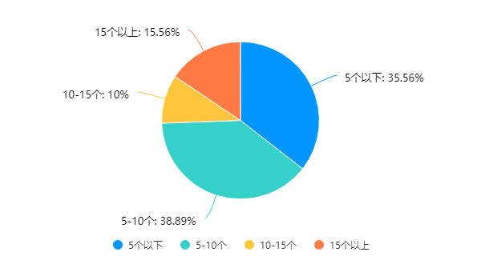
二是操作割裂，手动管理流程的低效性是主要痛点，跨工具录入“繁琐、耗时。45.6% 的用户 “经常 / 总是” 觉得 “从微信聊天框切换到日历 APP 手动录入日程” 很麻烦，操作步骤多（平均需 4-6 步）导致积极性低；48.3% 的用户每周花 1-3 小时管理日程（如录入、核对、调整），31.9%（23.0%+8.9%）每周耗时 3 小时以上，手动操作的时间损耗显著；跨工具切换过程中易因分心导致时间、地点等信息录入错误。

三是工具被动，现有工具难以适配动态校园场景。70.1% 的用户希望增加 “日程冲突检测” 功能（避免时间重叠），57.5% 期待 “智能时间建议”（如根据课程表推荐小组讨论时间），51.7% 需要 “动线规划提醒”（如结合地点计算出发时间），三类核心智能功能的需求率均超 50%，反映出智能功能需求强烈。
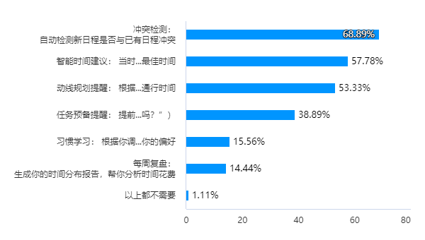
本次调研的核心价值在于为 WeSchedule 产品开发提供数据驱动的决策依据：一是验证 “微信消息转日程” 核心方案的用户接受度，降低产品开发风险；二是量化用户痛点的普遍性与严重程度，明确产品核心价值主张；三是识别种子用户特征与功能偏好，为产品迭代提供优先级指引；四是探明用户对隐私安全、AI 准确性的容忍边界，优化产品体验设计。
本次市场调研的核心目标是为“WeSchedule——微信生态中的智能日程助手”产品概念提供全面、可靠的验证依据，确保产品开发方向与真实市场需求高度契合。调研并非旨在精确推断全国大学生总体的宏观参数，而是聚焦于为产品最小可行产品（MVP）的决策提供支撑，其战略定位具有鲜明的探索性和验证性。具体目标可分解为以下三个层面：
在假设验证层面，调研需量化评估PRD（产品需求文档）中提出的核心用户痛点（信息过载导致遗漏、手动录入效率低下等）的普遍性与严重程度，并测试“通过手动转发微信消息至小程序以创建日程”这一核心解决方案的用户接受度与可行性。
在用户定义层面，目标是识别并刻画2至3个典型的早期采纳者画像，明确其人口统计学特征、行为习惯及深层动机，使产品设计有明确的聚焦点。
在决策支持层面，调研结果需为MVP功能优先级排序、后续版本迭代路线图规划提供数据支持，并探明用户对隐私安全、数据使用以及AI识别错误容忍度等关键边界条件。
本次调研的目标总体明确界定为一所高校的在校全日制学生，包括本科生与研究生。选择单一且具代表性的高校作为研究范围，是基于MVP初期集中资源、深度验证产品在特定场景下适应性的策略考量。此举有助于在可控环境下获得高质量洞察，为后续向同类高校推广奠定基础。
调研对象将覆盖不同年级（大一至大四、研究生及以上）、不同专业类型（理工类、经管类、人文社科类、医学类、艺术体育类等）以及不同社交活跃度（如是否担任学生干部、社团骨干，或经常参与小组讨论、实习兼职）的学生，以确保能捕捉到多样化的用户场景和需求差异。
本报告围绕 WeSchedule 产品概念的调研验证展开，为方便不同需求的读者快速获取核心信息，特提供如下阅读指引：若您关注产品推出的背景与市场机会，可重点阅读第 2 章（前言）与第 3 章（行业趋势与机会分析），快速把握痛点来源与市场空白；若您想了解产品核心定位与功能，第 4 章（产品概念详情）将系统介绍产品形态、核心功能与演进思路；若您关注调研的科学性与数据可靠性，第 5 章（调研方法）与第 6 章（核心调研结果分析）是核心内容，前者说明调研设计与局限性应对，后者呈现信效度、样本特征、痛点数据、交叉分析等关键结论；若您聚焦竞争环境与差异化优势，第 7 章（竞品分析）将解析三类核心竞品的优劣势与产品机会点；若您仅需决策依据，可直接阅读第 8 章（需求验证结论与商业可行性分析）与第 9 章（战略建议与行动方案），快速获取结论与落地方向。
2025年，全球日历和日程安排软件市场展现出稳健的增长态势，并预计在未来几年内将持续保持强劲的发展势头。市场增长的主要驱动力来自于全球范围内企业数字化进程的加速以及混合办公模式的普及，这些因素显著提升了对高效、协同时间管理工具的需求。
从产品部署模式来看，基于云的解决方案已经成为市场绝对主流，其市场份额显著超越本地部署模式。这一趋势得益于云部署固有的灵活性和可扩展性，能够更好地满足现代分布式团队的需求。预计未来，随着企业对上云接受度的进一步提高，云部署模式的渗透率将持续提升。
中国市场在全球格局中扮演着日益重要的角色，其增长速度预计将高于全球平均水平。中国市场的活力主要源于庞大的用户基数、移动互联网的高普及率以及国内企业对效率工具需求的快速增长。特别是在个人用户市场，以及中小企业领域，呈现出旺盛的需求。
在客户需求结构方面，企业客户构成了市场的收入主体，其中中小企业的需求贡献尤为突出。同时，个人用户市场虽然份额相对较小，但显示出更高的增长潜力，表明面向个人及小团体的轻量级、敏捷型日程管理工具存在广阔的发展空间。支持远程与混合办公场景的功能，已经成为市场新增需求的核心驱动力。
市场持续增长，需求刚性化。随着社会节奏加快和信息爆炸式增长，个人与组织对时间管理和效率提升的需求日益迫切。当前，中国效率办公类应用的用户规模持续扩大，大众尤其是年轻一代对数字化、智能化工具的接受度极高。后疫情时代混合式学习与工作模式的普及，进一步强化了对跨平台、协同化日程管理的需求。
技术驱动智能化升级。人工智能（AI）与自然语言处理（NLP）技术的成熟，正推动日程管理工具从被动的“记录工具”向主动的“智能助手”演进。自动识别、智能建议、预测性规划已成为行业领先产品的竞争焦点。大语言模型（LLM）的应用显著提升了从复杂、非结构化文本（如聊天记录）中提取日程信息的能力，为产品创新提供了技术基础。
生态整合成为关键壁垒。独立日程应用面临巨大竞争压力，竞争不仅来自同类应用，更来自超级App（如微信、钉钉）内置功能和手机操作系统原生工具（如iOS日历、华为日历）。未来，能够深度融入用户核心工作与沟通场景（如办公协同软件、即时通讯工具）的产品，将更具用户粘性和发展潜力。
技术发展正向智能化和融合化深度演进。人工智能技术在日程安排软件中的应用正从边缘功能走向核心。主流厂商正积极将AI能力，如自动排程引擎和智能日程助理，集成到产品中，以期实现更预测性和自动化的时间管理。此外，强烈的融合化趋势使得日程软件不再是一个孤立的应用。当前的产品开发重点在于将其与电子邮件、即时通讯、视频会议和项目管理等日常工作流程中的关键工具进行深度整合，为用户提供统一的工作界面和无缝的体验。
市场竞争格局呈现出“巨头主导与细分真空”并存的特点。市场由少数主流竞争者主导，它们在企业级和个体级市场拥有强大的影响力。然而，在特定的细分市场，如大学生和年轻个人用户群体中，用户渗透率并不高，尚未出现统治级别的产品。现有工具（包括系统自带应用）在满足这些用户群体对社交集成、智能识别和移动端体验等方面的需求上存在明显不足，这为创新者留下了切入的空间。
以微信生态为例，其极高的用户渗透率和丰富的群聊场景催生了未被满足的“缝隙式”需求。大量用户仍然依赖手动复制粘贴等原始方式管理来自聊天记录的日程信息，流程中存在明显的断点。这为能够与微信等超级应用进行深度集成、实现“信息一键转日程”的轻量级解决方案提供了机会。小程序等技术路径，结合平台开放接口，为实现这一场景提供了可行性。
当前市场竞争格局可划分为三个层次：
| 竞争层次 | 代表产品 | 核心优势 | 固有劣势 | 对WeSchedule的启示 |
|---|---|---|---|---|
| 1. 操作系统原生工具 | iOS日历、华为日历、MIUI日历等 | 系统级集成，通知权限高；操作简单；用户无需下载。 | 被动、孤立：与信息源（如微信）割裂，需完全手动输入；功能单一，缺乏针对特定场景的智能能力。 | 核心突破口：WeSchedule不直接替代，而是增强原生日历。通过解决“信息输入”的痛点，成为通向原生日历的“智能化桥梁”。 |
| 2. 第三方专业效率应用 | 滴答清单、Todoist、Microsoft To Do等 | 功能强大、专业，支持GTD等多种方法论；跨平台同步体验好。 | 学习成本高：功能复杂，对追求轻快的大学生群体可能过于“重型”；与微信场景分离，无法直接处理群消息，切换成本依然存在。 | 差异化定位：WeSchedule极致聚焦“微信消息转日程”这一单点，追求极简体验，避免功能冗余，满足大学生“够用就好”的核心诉求。 |
| 3. 超级App内置功能/潜在竞品 | 微信“收藏”备注、钉钉日程、飞书日程 | 内生于沟通环境，信息流转路径短。 | 功能边缘且薄弱：微信自身的日程功能隐藏深、体验差；钉钉、飞书等主要面向职场，在大学生中渗透率有限，且风格过于“正式”。 | 生态位机会：微信生态内恰恰缺少一款体验优雅、专注日程的轻量级工具。WeSchedule利用小程序形态，旨在成为微信生态中“最懂日程”的补充，而非挑战者。 |
WeSchedule面临的并非红海市场的正面竞争，而是发现了主流竞争者在场景深度融合上的空白地带。其战略是依托微信生态，通过“手动转发”这一创新交互，在“超级App功能不足”与“专业App过重且场景割裂”的夹缝中，开辟一个全新的、精准的蓝海市场。
在商业模式上，免费增值加订阅的模式已成为行业标准。对于新兴产品而言，针对特定细分市场（如校园）的轻量级订阅方案正逐渐形成清晰的定价区间，附加了人工智能等高级功能的订阅包，其用户付费意愿和长期留存率均显著高于传统的增值服务包，这为新产品验证商业模式、提升用户价值指明了方向。
目标用户——中国大学生的关键特征：
数字化原住民，乐于尝试新事物。大学生群体是伴随着互联网和智能设备成长的一代，对新技术、新应用抱有极高的好奇心和接受度，愿意为提升效率和生活品质尝试新的数字产品。
微信是绝对主导的超级应用。微信是其学习、社交、生活的中心，课程群、社团群、班级群是信息获取的核心渠道。调研数据表明，大学生每日花费在微信上的时间长达数小时，重要的日程信息几乎全部沉淀在聊天记录中，“信息在微信内，管理在微信外”是核心矛盾。
痛点明确且付费意愿可塑。“信息过载易遗漏”、“多App切换手动录入繁琐”是普遍且高频的痛点。前期小范围调研显示，40%左右的受访者对现有日程管理方式表示“一般”或“不满意”。
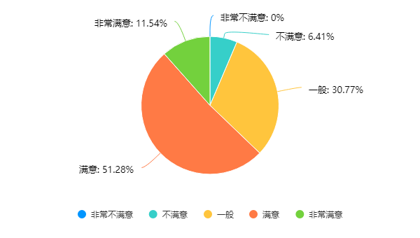
大学生对价格敏感，但对能真切解决其痛点的数字化服务，已展现出可塑的付费意愿。初步概念测试中，有相当比例用户表示“愿意为特别好用的高级功能付费”，偏好月度订阅价格区间集中在5-15元，这与一杯奶茶的消费心理账户相符。关键在于产品能否提供不可替代的核心价值。
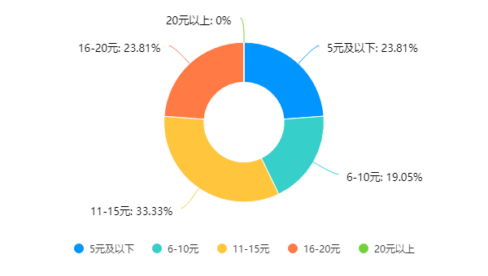
社交影响力强大。校园内口碑传播、社群推荐是产品裂变的关键。一旦产品在某个社团或班级中获得认可，极易通过社交关系链迅速扩散。
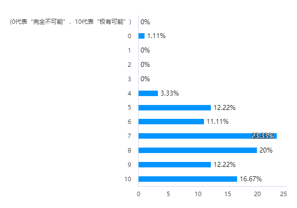
在全球市场向智能化、融合化发展的背景下，特定区域市场展现出更具结构性的增长机遇。在中国市场中，微信作为覆盖广泛的社交平台，已深度融入用户的学习、工作和生活，尤其在年轻群体中构成了高粘性的数字环境。这一生态在带来便捷的同时，也产生了特定的用户痛点：大量与日程相关的信息沉淀于群聊场景中，而主流的时间管理工具与这一核心信息场景存在割裂，导致用户不得不进行繁琐的手动操作，形成了从“信息识别”到“日程创建”的显著效率断点。这为能够深度融入现有生态、提供轻量级无缝体验的解决方案提供了明确的创新土壤。
从宏观环境看，当前氛围对这类创新产品呈现出支持态势。在政策层面，鼓励数字化转型与人工智能技术应用的方向为产品开发提供了宏观指引，同时日益严格的数据隐私法规也要求产品在设计之初就将安全合规作为核心基石。在经济与社会层面，用户为提升个人效率而付费的意愿逐渐成熟，尤其在对价格敏感但渴望高效能的年轻学生群体中，存在对高性价比工具的切实需求。微信生态所构建的强社交属性，使得日程管理超越了个人工具范畴，与社群协作产生了天然联系。在技术层面，小程序框架的成熟与大型语言模型能力的开放，使得小型团队能够以可控成本开发出具备智能交互能力的产品，技术可行性大幅提高。
综上所述，市场机会在于深度融合特定数字生态，精准解决特定用户场景下的核心痛点。利用成熟的技术手段，在庞大的平台生态内提供高度聚焦、体验流畅的轻量级解决方案，不仅契合技术发展趋势，也有效避开了与通用型产品的正面竞争，为产品验证和初期增长提供了清晰路径。
中国大学生日程管理市场是一个规模巨大、痛点清晰、且存在明确产品空白的高潜力市场。WeSchedule凭借其对特定场景的深度聚焦和创新的交互设计，有望避开与巨头的直接竞争，精准切入这一细分领域，并依托微信生态实现快速增长。
行业也面临着隐私合规与技术准确性的挑战。随着全球数据隐私法规的日趋严格，尤其是在处理敏感信息（如聊天记录）时，开发者必须将隐私保护和数据合规置于产品设计的核心位置。此外，对于依赖AI理解自然语言的产品，如何持续提升对口语化、非正式时间表达的识别准确率，以达到用户期望的“无感知”流畅体验，是一项关键的技术挑战。同时，产品高度依赖的超级应用平台其自身政策的潜在变动，也要求第三方开发者必须保持技术方案的敏捷性和场景创新的领先性，以应对可能的变化。
WeSchedule的产品定位清晰且聚焦：它立志于成为微信生态内，最懂中国大学生的个人智能日程管家。其核心价值主张在于，通过深度集成微信的社交与沟通场景，将用户从“阅读群消息→理解→切换至日历/日程管理App→手动输入→保存”的繁琐、易出错的流程中彻底解放出来，简化为“一键转发→确认”的两步极致简约操作，从而显著降低日程遗漏风险，提升时间管理效率。
在产品形态上，WeSchedule在MVP阶段将严格以微信小程序的形式交付。这一选择基于多重战略考量：首先，小程序无需下载安装，触达用户路径最短，符合大学生追求高效、便捷的特性；其次，它能无缝嵌入微信环境，直接调用微信的授权、消息转发等原生能力，为实现“一键转发”的核心交互奠定技术基础；最后，小程序开发与迭代成本相对可控，非常适合MVP阶段的快速验证与迭代。
其核心功能矩阵围绕“收-识-管-智”的流程构建：
核心功能流：消息转日程：这是产品的立身之本。用户只需将包含日程信息的微信聊天消息转发至WeSchedule小程序，即可触发后台的AI解析引擎，自动识别并提取事件主题、时间（支持绝对和相对时间）、地点、参与人等关键要素，并生成清晰的日程预览页供用户确认和微调，最终一键添加至手机系统日历。
日程管理与同步：提供基础的“我的日程”列表视图，并确保与手机系统日历（iOS/Android）的可靠双向同步，尊重用户现有的日历使用习惯。
智能建议（MVP后置或V1.1版本）：在核心流程验证成功后，逐步引入基于规则的智能功能，如冲突检测（避免时间重叠）、动线规划提醒（结合课程表地点信息智能推算出发时间）等，从“记录工具”向“规划助手”演进。
用户画像与偏好学习（基础）：通过极简引导收集用户学校信息（用于优化地点库），并隐式学习用户对AI解析结果的编辑行为，为未来的个性化服务积累数据。
基于前期调研洞察，可初步刻画为2-3个核心细分群体。
社团达人/学生干部：典型特征为年级分布于大二至大四，活跃于多个社团或学生组织，每周需要关注的群聊数量多，日程变更频繁，对协同安排和防遗漏有极高需求。他们是产品的早期采纳者和高频使用者。
科研党/研究生：特征为硕士或博士研究生，日程中除课程外，包含大量实验室会议、论文截止日期、学术研讨会等相对独立且重要的日程，对日程的准确性和提前规划（如任务预备提醒）有强烈需求。
实习兼职活跃者：特征为课余时间参与实习或兼职，需要在学业、校园活动与社会工作之间进行精细化的时间平衡，对跨场景、跨类型的日程统一管理存在痛点。
WeSchedule的竞争力并非源于单一功能的颠覆，而是源于其对特定场景、特定人群的深度理解和整合创新。
与手机自带日历及第三方日历App（如Google Calendar） 相比，WeSchedule的差异化在于“场景融合”而非“功能堆砌”。传统日历是独立于沟通场景的“记录工具”，用户需要主动、手动录入信息。而WeSchedule则深度嵌入微信这一日程信息产生的源头，实现了“沟通即记录”。它解决的并非日历功能本身，而是解决信息从沟通场景到日历工具的“最后一公里”自动化问题，提供了前所未有的便捷性。
与市面上其他尝试做日程管理的AI助手或社交工具相比，WeSchedule的差异化在于“专注”与“轻量”。它不一味追求全自动（技术上高风险且易引发隐私担忧），而是创造性采用了“手动转发”这一用户可控性高、技术实现路径清晰的交互方式，在自动化与用户控制权之间取得了良好平衡。同时，它极度聚焦于“大学生”这一群体及其高度依赖微信群的独特日程管理生态，能进行更深度的需求满足和体验优化。
其潜在的竞争壁垒主要体现在以下几个方面：
场景与数据壁垒。通过早期用户积累，形成针对中文大学生群聊场景的、高质量的日程信息解析数据集，用于持续优化AI模型的准确率，这将构成后来者难以短期超越的技术门槛。
用户体验与习惯壁垒。“一键转发”的极致便捷体验一旦被用户接受，将形成强烈的使用习惯和路径依赖，迁移成本随之升高。
生态整合壁垒。作为微信生态的集成者，与微信消息体系的紧密耦合程度，是外部独立App难以复制的优势。
在盈利模式上，WeSchedule拟采用经典的免费增值（Freemium）模型。基础功能，即核心的“消息解析与日程创建”服务，将永久免费向所有用户开放，以此快速积累用户规模，构建网络效应和品牌影响力。高级的智能功能，如深度的习惯学习、详细的每周复盘报告、更复杂的冲突检测与智能建议等，将作为付费订阅内容，打包成“会员”服务。
在定价策略上，前期问卷调研数据将为定价提供关键参考。初步方向是采用具有吸引力的月度订阅制，价格区间将参考大学生群体的消费能力，可能锚定在5-15元/月的范围，并提供更具折扣优惠的年度订阅选项。定价将强调极致性价比，传递“一杯奶茶的钱，解决一个月日程焦虑”的价值感知。同时，针对教育用户的特殊优惠或校园推广期的特定折扣也是可考虑的策略。
渠道布局思路完全围绕目标用户的核心活动场域展开，即线上深耕，线下辅助。线上渠道是主战场，包括：精准潜入各大高校的课程群、社团群、校友群进行种子用户推广；与校园KOL、社团合作进行内容种草；在大学生活跃的社交平台（如小红书、B站）进行内容营销。线下渠道则作为补充，可考虑与高校内的创业社团、学生会合作举办小型推广活动，或在校内特定场景（如图书馆、食堂）进行二维码地推。
为确保产品稳步发展，所规划的演进路线为：MVP版本将严格聚焦，仅包含微信登录、消息转发、AI解析、日程预览与编辑、同步至系统日历等最核心功能，唯一目标是验证“手动转发”流程的接受度。在MVP验证成功后，V1.1版本可优先开发并上线1-2项付费意愿最高的智能功能，启动商业化探索。后续版本则持续深化智能能力，并探索基于用户数据的更多个性化服务，逐步构建起完整的产品生态与稳固的商业护城河。
本研究采用“定性→定量→定性”的混合研究模式，依次递进，确保洞察的深度与广度。
定性研究阶段首先启动，主要通过深度访谈进行。计划招募12-15名高校学生，依据年级和社交活跃度进行分层抽样。访谈采用半结构化提纲，历时约35-45分钟，重点围绕“当前日程管理行为与痛点场景重现”、“对‘手动转发’解决方案的初始感知与接受度”以及“对智能功能的期望与价值排序”等模块展开。执行要点在于通过用户体验旅程图方法，引导用户详细描述具体行为而非概括性回答，并深度挖掘其因日程管理失误而产生的“灾难性”事件及情感体验，以验证痛点的真实性与严重性。
定量研究阶段紧随其后，旨在对定性研究发现进行大规模量化验证。计划通过校园社群、线上平台发放结构化线上问卷，目标回收100余份有效问卷。问卷设计涵盖了基本情况、当前习惯与痛点、解决方案概念测试、付费意愿与顾虑等多个模块，并大量使用矩阵量表题测量频率和程度。在抽样方法上，基于调研目标（概念测试而非总体推断）的考量，采用了非概率抽样中的“方便抽样”与“滚雪球抽样”相结合的策略，以快速、经济地触达目标用户。在执行过程中，特别强调问卷设计的客观中立，避免诱导性提问，并设置注意力检查题以确保数据质量。数据分析将包括描述性统计、交叉分析（如不同年级、专业学生的需求差异）以及量表分析。
定性验证阶段在定量研究之后进行，通过高保真原型测试来评估产品的用户体验。从参与过访谈的用户中招募8-10名目标用户，让其在实际操作模拟的“转发-解析-确认”核心流程。研究将刻意设置1-2处AI识别错误，观察用户的真实反应（是选择编辑修正还是直接放弃），以此深入探察其对识别错误的容忍度及对交互流程顺畅性的评价。
此外，持续的案头研究贯穿整个调研周期，重点对3-5款核心竞品进行优劣势分析，并关注应用商店用户差评，以识别市场空白机会点，辅助产品差异化定位。
本次调研基于目的采用了方便抽样与滚雪球抽样。这种方法在项目初期、以快速验证概念和洞察需求为首要目标的情景下具有合理性，它能有效降低调研成本与周期，快速触达如活跃于线上社群的学生等高潜力目标用户。
然而，此种抽样方法也存在一定的局限性。调研样本的构成比例与实际学生比例（本研比例、专业比例等）的结构性偏差，会直接导致调研结论失真，可能严重低估占学生主体的研究生和理工类学生群体的需求，从而影响产品定位的准确性和功能设计的全面性。
因此，本次调研在数据清洗与分析阶段，将进行加权处理，以修正样本分布与总体分布的偏差。具体操作：首先，根据官方数据计算各群体（如本科生、研究生，以及各专业类型）的实际比例与样本比例；其次，计算权重系数（权重系数 = 总体比例 / 样本比例）；最后，利用Excel中的SUMPRODUCT函数，对“付费意愿”、“核心功能接受度”等关键指标进行加权计算，使其更贴近目标高校真实的用户结构。加权后的数据将能显著提升研究结论对于目标总体的可信度。
信度是衡量量表内部一致性与稳定性的核心指标，本研究采用 Cronbach's α 系数对调研量表的信度进行检验。
本次调研针对大学生日程管理痛点与产品顾虑相关维度设计了 10 个核心测量项目，有效样本量为87份。经检验，量表整体 Cronbach's α 系数为 0.668。根据量表信度评价标准，α 系数0.6-0.7 为可接受范围。考虑到本调研属于探索性研究，聚焦于大学生群体特定场景下的需求洞察，且测量维度涵盖痛点感知、使用顾虑等多个具象化场景，0.668 的 α 系数表明量表内部一致性处于可接受水平，各测量项目之间具有较好的同质性，测量结果可靠，能够稳定反映目标变量的真实情况。
效度旨在检验量表测量内容的准确性与有效性，本研究通过探索性因子分析（EFA）检验量表的结构效度。
在进行因子分析前，通过 KMO 检验与巴特球形检验判断数据是否适合因子提取。结果显示，KMO 值为 0.730，0.7-0.8 属于 “适合” 因子分析的范围，表明变量间的偏相关性较强，数据结构适合进行探索性因子分析；巴特球形值为 293.006，自由度 df=45，p<0.001（显著性水平），拒绝 “变量间独立” 的原假设，说明量表各项目之间存在显著的相关关系，进一步验证了因子分析的适用性。
采用主成分分析法提取因子，并通过旋转（默认方差最大旋转）优化因子结构。结果显示，旋转后共提取出 3 个特征根大于 1 的公因子，累计方差解释率达 65.75%，超过 60% 的理想标准，表明这 3 个公因子能够较好地概括原始 10 个测量项目的核心信息，量表的结构效度良好。
各因子的项目载荷、共同度及方差解释情况如下：
因子 1：日程管理核心痛点因子
包含 5 个测量项目：“担心自己会忘记看群消息 / 忘了记下来”“手动从聊天框切换到日历 App 输入很麻烦”“事后找不到那条消息了”“记下了时间，但忘记了需要提前准备（如准备材料）”“记下了会议时间，但低估了通勤时间导致迟到”。
各项目因子载荷在 0.70-0.81 之间，均大于 0.6 的临界值，表明项目与该因子的关联性较强；项目共同度在 0.518-0.725 之间，说明该因子对各项目的解释力良好。
该因子旋转后方差解释率为 31.05%，核心反映大学生在日程管理过程中面临的信息遗漏、操作繁琐、准备不足等核心痛点，故命名为 “日程管理核心痛点因子”。
因子 2：产品使用顾虑因子
包含 4 个测量项目：“识别不准确，经常出错，反而需要花更多时间修改”“操作体验差，小程序卡顿，不如手动输入快”“提醒不及时或过度提醒，造成打扰”“收费模式，担心后期乱收费或免费版无法使用”。
各项目因子载荷在 0.60-0.86 之间，均满足载荷阈值要求；项目共同度在 0.431-0.741 之间，因子解释力良好。
该因子旋转后方差解释率为 22.31%，聚焦于用户对产品功能准确性、操作体验、提醒机制及收费模式的顾虑，故命名为 “产品使用顾虑因子”。
隐私安全顾虑因子
包含 1 个测量项目：“隐私安全，担心聊天记录被泄露或滥用”。
项目因子载荷高达 0.92，共同度为 0.868，因子对该项目的解释力极强。
该因子旋转后方差解释率为 12.39%，专门反映用户对产品处理聊天记录过程中隐私安全问题的单独顾虑，故命名为 “隐私安全顾虑因子”。
| 项目 | 因子1 | 因子2 | 因子3 | 共同度 |
|---|---|---|---|---|
| 担心自己会忘记看群消息/忘了记下来 | 0.70 | 0.10 | -0.11 | 0.518 |
| 手动从聊天框切换到日历 App输入很麻烦 | 0.78 | 0.13 | -0.17 | 0.655 |
| 事后找不到那条消息了 | 0.80 | -0.04 | 0.04 | 0.641 |
| 记下了时间，但忘记了需要提前准备(如准备材料) | 0.81 | -0.21 | 0.16 | 0.725 |
| 记下了会议时间，但低估了通勤时间导致迟到 | 0.76 | -0.08 | 0.14 | 0.604 |
| 隐私安全，担心聊天记录被泄露或滥用 | 0.12 | 0.09 | 0.92 | 0.868 |
| 识别不准确，经常出错，反而需要花更多时间修改 | -0.27 | 0.60 | 0.50 | 0.682 |
| 操作体验差，小程序卡顿，不如手动输入快 | -0.04 | 0.86 | 0.01 | 0.741 |
| 提醒不及时或过度提醒，造成打扰 | -0.10 | 0.80 | 0.23 | 0.710 |
| 收费模式，担心后期乱收费或免费版无法使用 | 0.17 | 0.63 | -0.07 | 0.431 |
| 特征根值(旋转前) | 3.18 | 2.33 | 1.07 | - |
| 方差解释率%(旋转前) | 31.77% | 23.33% | 10.65% | - |
| 累积方差解释率%(旋转前) | 31.77% | 55.09% | 65.75% | - |
| 特征根值(旋转后) | 3.10 | 2.23 | 1.24 | - |
| 方差解释率%(旋转后) | 31.05% | 22.31% | 12.39% | - |
| 累积方差解释率%(旋转后) | 31.05% | 53.36% | 65.75% | - |
| KMO值 | 0.730 | - | ||
本次调研以高校学生群体为研究对象，采取方便抽样和滚雪球抽样的方式，共发放问卷90份，回收有效样本87份，样本背景特征涵盖人口统计学信息、微信使用行为及用户活跃度三个维度，具体分布如下：
本次调研的样本年级分布覆盖本科各阶段及研究生群体，其中大二学生占比最高，达 36.8%，是样本中的核心构成；大三学生占比 21.8%，大一、大四学生占比分别为 18.4% 与 17.2%；研究生群体占比相对较低，为 5.7%，多学习阶段的覆盖能够体现不同时期的日程需求差异。从专业类型来看，样本以理工类学生为主，共 40 人，是本次调研的主要群体；人文社科类学生次之，共 25 人；医学类、经管类学生分别为 12 人、10 人，多学科领域的纳入可捕捉不同学业场景下的日程管理特征。
本次调研以 “是否担任职务或参与活动” 界定用户活跃度，其中选择 “以上均无” 的为普通用户，其余为高活跃用户：高活跃用户占比达 72.4%，这类用户通常面临更多元的日程安排需求；普通用户占比 27.6%，高活跃用户的高占比能够更精准地捕捉日程管理的核心痛点。
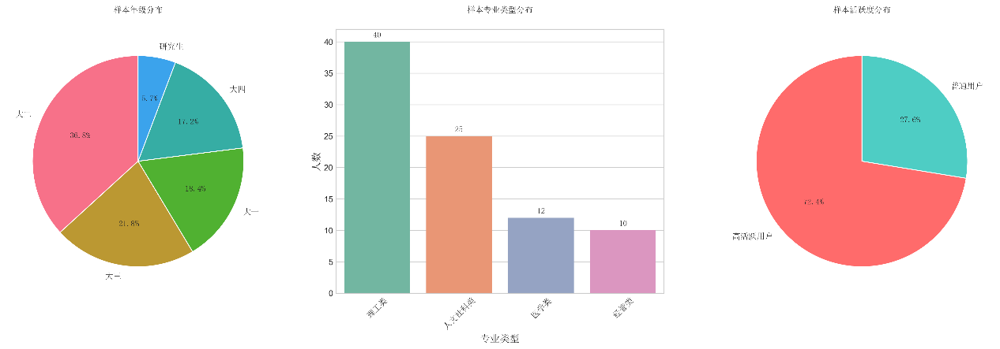
样本的微信使用行为呈现中高频特征：日均使用时长在 1-3 小时的用户最多，共 42 人，占比约 46.7%；3-5 小时、5 小时以上的用户分别为 20 人、17 人；仅 8 人日均使用时长在 1 小时以下，较高的微信使用粘性与研究场景的用户画像高度契合。而日均参与群聊的数量分布同样体现出较高的参与度，其中参与5-10个群聊的用户达 35 人，占比约 38.9%；参与 5个以下群聊的用户为 31 人；参与 10-15个、15个以上群聊的用户分别为 9 人、12 人，群聊参与度高的特征恰好对应了群消息中隐藏的日程管理需求。
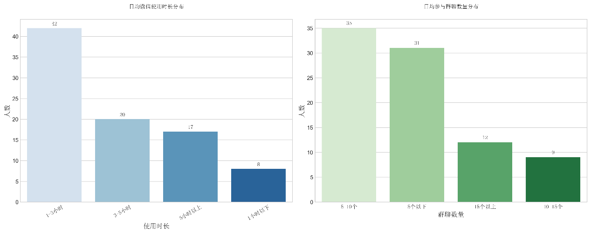
整体而言，本次调研样本覆盖了不同年级、专业的大学生群体，同时具备微信使用粘性高、群聊参与度高、用户活跃度高的特征，与 “微信场景下大学生日程管理痛点” 的研究主题高度适配，样本代表性较强，所收集的数据能够为后续的需求分析与结论推导提供有效支撑。
调研数据显示，当前用户的日程管理工具选择呈现出以基础工具为主的特征，其中手机系统自带的日历（如 iOS 日历、华为日历）是最常用的工具，占比达到 46.67%，其次是借助微信 / QQ 的聊天记录、收藏或备注功能管理日程，这一占比也达到了 44.4%，而纸质笔记本 / 手账、第三方日历 App 等工具的使用占比相对较低，还有 5.56% 的用户表示几乎不系统管理日程。从日程管理的满意度来看，用户整体处于中等偏上的评价水平：表示 “满意” 的用户占比 51.28%，“非常满意” 的用户占 11.54%，合计超六成用户对现有工具持正向态度；同时有 30.77% 的用户认为满意度 “一般”，仅 6.41% 的用户表示 “不满意”，无 “非常不满意” 的反馈，这说明现有工具基本能覆盖基础日程管理需求，但仍存在体验优化的空间。
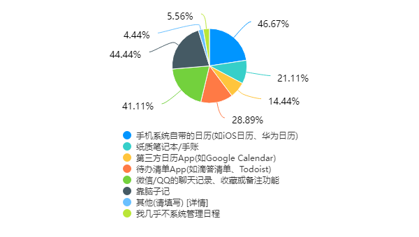

从用户的核心日程场景来看，学业相关安排是主要需求来源，其中 “作业 / 报告提交截止日” 的占比高达 52.22%，“课程调整（调课、停课）”“小组会议 / 讨论” 的占比也分别达到 27.78%、26.67%，这意味着用户的日程管理痛点多集中在学业场景中。具体到痛点的普遍性，“记下了会议时间，但低估了通勤时间导致迟到”“事后找不到那条消息了” 等问题的高频出现比例较高，以 “低估通勤时间” 为例，选择 “总是”“经常” 存在该问题的用户占比合计达 21.11%，“有时” 存在该问题的占比更是达到 41.11%。
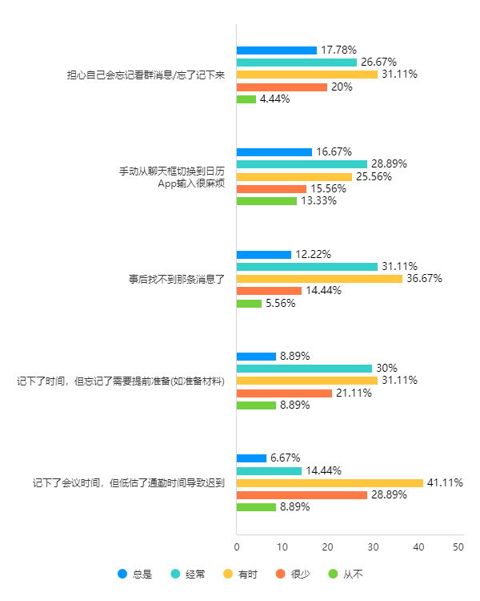
从用户最近一次因遗漏群聊日程信息而带来不便的场景分布来看，学业相关场景是核心痛点领域：“作业 / 报告提交截止日” 的占比高达 52.22%，是最集中的痛点场景；“课程调整（调课、停课）”“小组会议 / 讨论” 的占比也分别达到 27.78%、26.67%；“社团活动”“朋友聚会 / 约会” 的占比相对较低，分别为 10%、6.67%，仅 2.22% 的用户表示 “似乎没有发生过”，这直接明确了痛点的高频发生场景集中于学业安排。
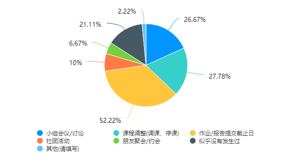
针对核心功能 “微信消息转日程”，用户的接受度表现出较高的积极性：表示 “比较感兴趣” 的用户有 50 人，占比 57.5%，“非常感兴趣” 的用户为 26 人，占比 29.9%，两者合计占比接近 88%，仅 3.4% 的用户表示 “不感兴趣”，说明该解决方案与用户的实际需求高度契合。
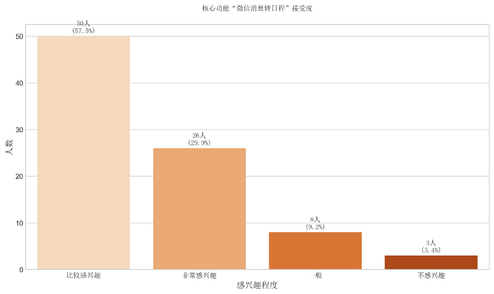
在高级功能的付费意愿方面，用户的倾向相对谨慎：仅 24.1% 的用户明确表示 “愿意付费”，44.8% 的用户选择 “不确定，先用免费版”，还有 31.0% 的用户表示 “不愿意付费”，可见免费版体验是吸引用户的关键前提。
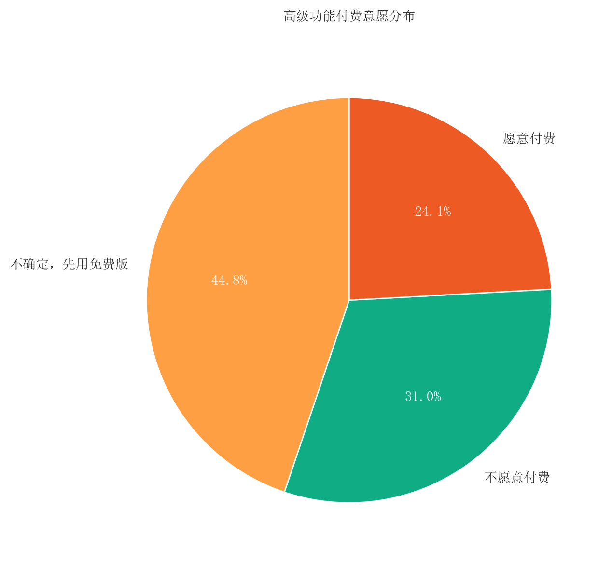
而愿意付费的用户中，月度订阅价格的接受区间集中在中低价位，“11-15 元” 的选择占比最高（33.3%），“5 元及以下”“16-20 元” 的占比均为 23.8%，20 元以上无用户接受，这为后续定价策略提供了明确参考。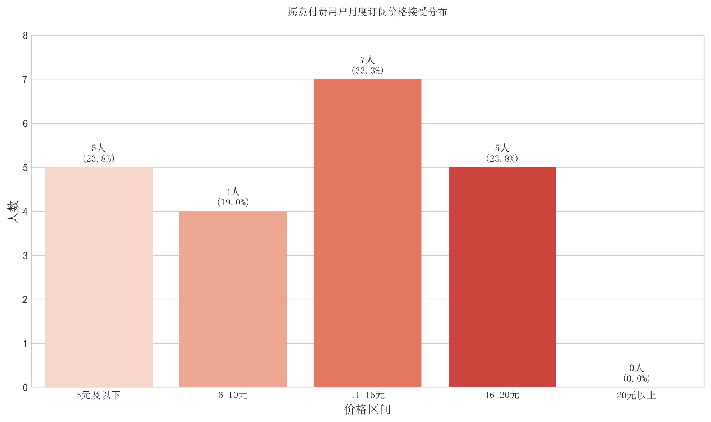
在智能功能的偏好排序中，用户的需求优先级差异明显：“冲突检测” 功能的选择率最高（70.1%），是用户最关注的智能功能，这契合了用户避免日程冲突的核心需求；其次是 “智能时间建议”（57.5%），用户希望获得更合理的日程时间规划；“动线规划提醒”（51.7%）也体现了用户对日程执行效率的关注。相比之下，“每周复盘”（14.9%）、“习惯学习”（13.8%）的选择率较低，说明用户当前的需求更聚焦于日程管理的实用性功能，对复盘、习惯养成类延伸功能的需求相对较弱。
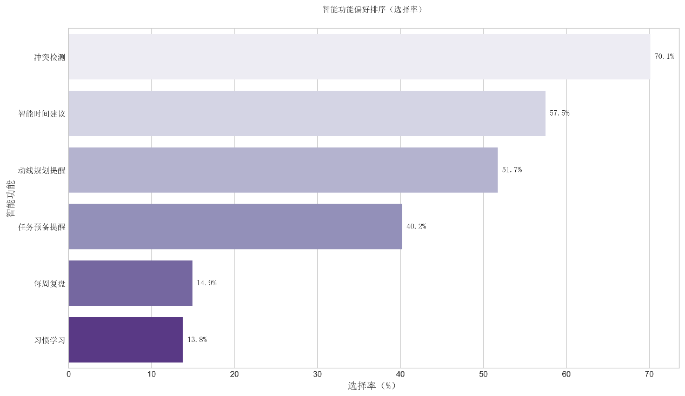
在产品概念的偏好测试中，用户对不同定位的产品倾向略有差异：选择 “贴心导向” 产品概念的用户共 49 人，占比 56.3%；选择 “效率导向” 的用户为 38 人，占比 43.7%，这说明用户既关注日程管理的效率提升，也期待产品能提供更贴合日常需求的贴心服务体验。
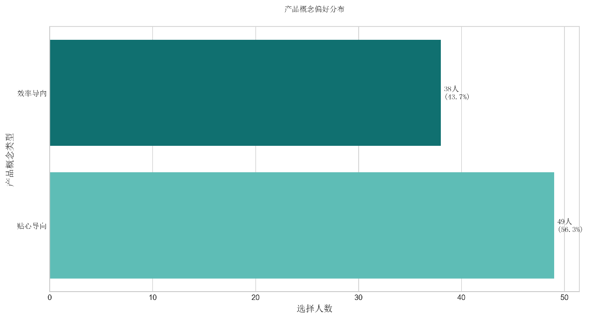
而从产品购买兴趣度的分布来看，用户的兴趣倾向呈现中间集中的特征：选择 “一般” 兴趣度的用户占比最高，达 48.3%（42 人）；表示 “较高”“极高” 兴趣度的用户合计占比 35.6%，其中 “极高” 兴趣度的用户仅 8.0%（7 人），同时有 6.9% 的用户兴趣度为 “极低”，这意味着当前产品概念已具备基础吸引力，但仍需进一步强化核心价值以提升用户的高兴趣度占比。
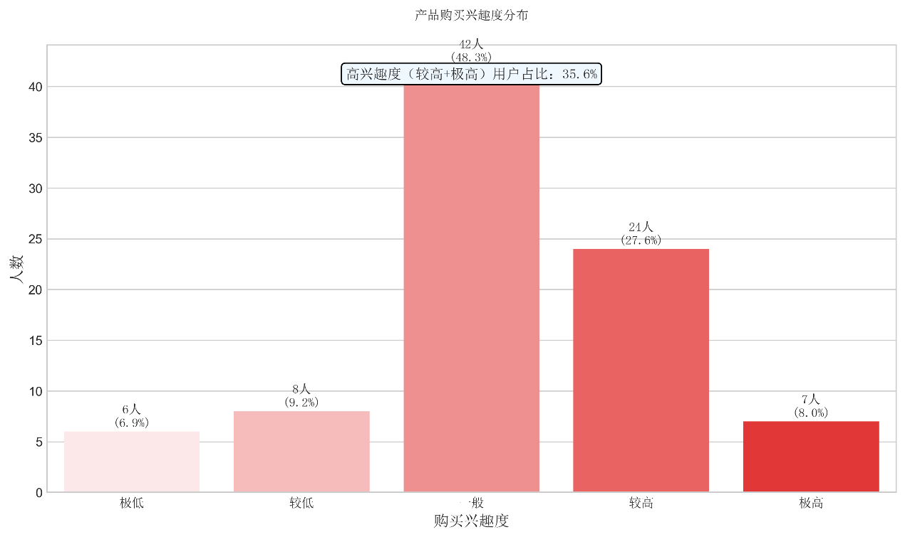
从用户对解决方案的使用顾虑来看，不同维度的顾虑程度与普遍性呈现出明显差异。结合顾虑程度的平均得分（1 分无顾虑、5 分最顾虑）与各程度的用户占比可知，“提醒不及时或过度提醒，造成打扰” 是当前用户最突出的顾虑：其 5 分（最顾虑）占比达到 48.89%，是所有顾虑项中高顾虑占比最高的一项，对应的平均得分也达到 3.96，意味着多数用户担忧该功能的提醒机制会影响日常节奏。
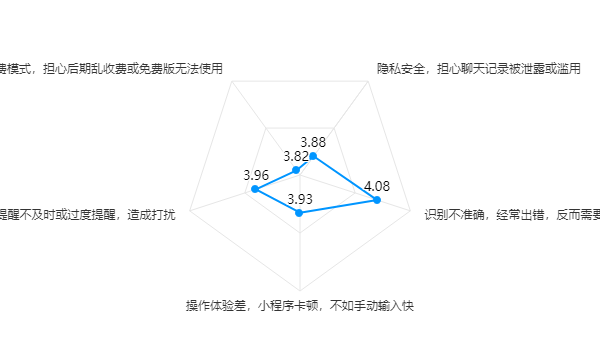
紧随其后的是 “识别不准确，经常出错，反而需要花更多时间修改”，该项的平均得分达 4.08，5 分占比与 4 分占比均为 38.89%，合计超七成用户对此存在较高顾虑，反映出功能的信息识别准确性是用户关注的核心体验点。“操作体验差，小程序卡顿，不如手动输入快” 的顾虑也较为显著，其 5 分占比 37.78%，平均得分 3.93，用户对工具的使用流畅度有明确的高要求。
而 “隐私安全，担心聊天记录被泄露或滥用”“收费模式，担心后期乱收费或免费版无法使用” 的顾虑程度相对稍低，两者的 5 分占比均在 36.67% 左右，平均得分分别为 3.82、3.88，但仍有超六成用户对这两项持有中高程度的顾虑。整体来看，用户的顾虑集中于功能体验的实用性（提醒、识别、操作），同时隐私与收费相关的权益保障也需同步重视，这也为后续功能优化明确了优先级方向。
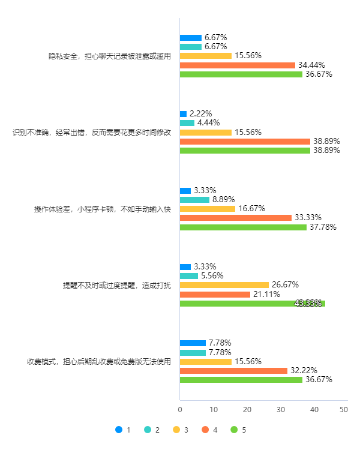
从用户活跃度差异来看，高活跃用户的痛点严重性更为突出：其 “低估通勤时间” 的高频占比达 39.7%，显著高于普通用户的 33.3%；“忘记提前准备” 的占比 34.9% 也高于普通用户的 16.7%，这与高活跃用户日程安排更密集的特征直接相关。
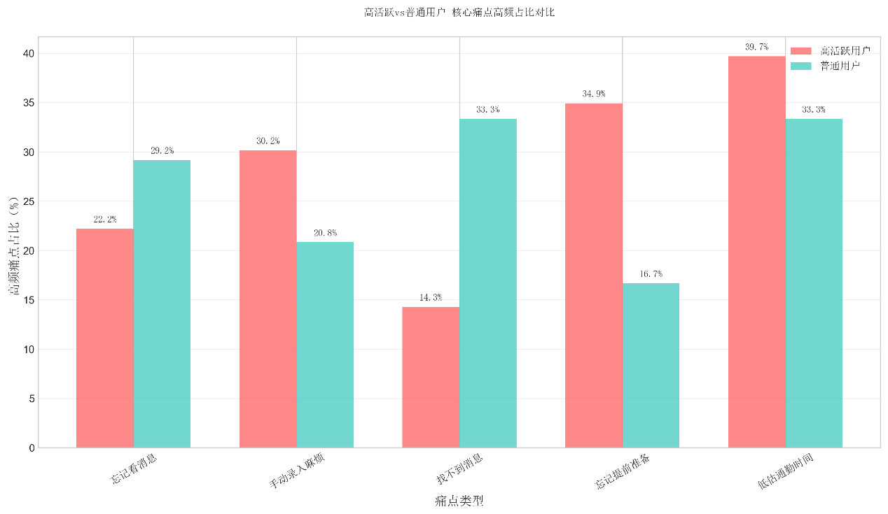
专业类型与年级这两类用户属性，也会显著影响遗漏日程信息的核心场景分布。从专业类型来看，不同学科的学业与事务特征直接塑造了痛点场景的差异：理工类用户最近一次因遗漏群聊日程而不便的场景中，“作业 / 报告提交截止日” 占比达 46.34%，是该群体最集中的痛点；人文社科类用户的这一占比更高，达到 64%，几乎是其唯一突出的痛点场景；经管类用户则呈现 “小组会议 / 讨论”（45.45%）与 “作业 / 报告提交截止日”（27.27%）双高的特征，契合其课程中小组协作的高频需求；医学类用户同样聚焦 “作业 / 报告提交截止日”，占比 66.67%，而艺术类、“其他” 类专业的用户中，“似乎没有发生过” 的占比相对更高，反映出不同专业学业节奏与事务密度的差异。
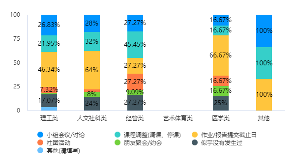
年级维度的差异则更贴合学生的成长阶段特征：大一用户的遗漏场景集中在 “社团活动”（47.06%）与 “小组会议 / 讨论”（41.18%），这与大一新生刚加入社团、参与课程小组的阶段特点高度契合；进入大二后，“作业 / 报告提交截止日” 的占比升至 56.25%，成为核心痛点场景；大三用户的痛点仍以 “作业 / 报告提交截止日”（55%）为主，同时 “课程调整（调课、停课）” 的占比达到 30%，体现出大三课程安排与学业任务的双重密集性；大四用户的 “作业 / 报告提交截止日” 占比进一步提升至 62.5%，结合毕业相关论文、项目的任务特征，该场景的痛点严重度更突出；而研究生及以上用户中，“似乎没有发生过” 的占比达到 40%，这或许与其日程管理经验更丰富、事务安排更系统化有关。
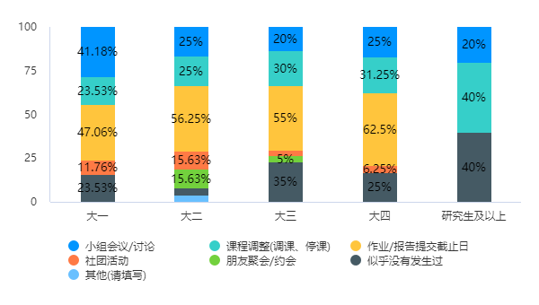
进一步细化不同场景的年级分布可以发现，“小组会议 / 讨论” 的痛点主要集中在大一用户（41.18%），后续年级占比逐步下降；“课程调整” 场景则以大二、大三用户为主，两者占比分别达到 25%、30%；“作业 / 报告提交截止日” 是覆盖各年级的共性痛点，但大三（55%）、大四（62.5%）用户的占比显著更高；“社团活动” 几乎是大一用户的专属痛点场景，占比达 47.06%，大二及以后年级的占比则大幅降低。这些差异既体现了不同年级学生的生活重心变化，也为后续产品针对不同群体的场景化优化提供了明确方向。
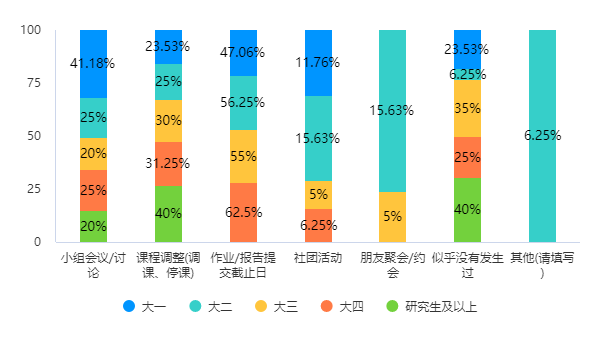
日均群聊数与各核心痛点频率的交叉分析结果，清晰呈现了信息过载程度与痛点严重度的正相关关系。以 “担心自己会忘记看群消息 / 忘了记下来” 为例，日均群聊数 5 个以下的用户中，“有时” 出现该问题的占比达 46.88%，但 “经常” 出现的占比仅 12.5%；而当日均群聊数升至 15 个以上时，“经常” 出现该顾虑的用户占比攀升至 28.57%，“总是” 出现的占比也从 3.13% 提升至 14.29%，意味着群聊参与越多的用户，高频遗忘群消息的风险显著提高。对于 “手动从聊天框切换到日历 App 输入很麻烦” 这一痛点，日均群聊数 5 个以下的用户 “经常” 受此困扰的占比为 40.63%，但 “总是” 遇到的占比仅 3.13%；而 15 个以上群聊的用户中，“总是” 面临该操作繁琐问题的占比升至 21.43%，反映出群聊密集的用户对 “切换输入” 的低效体验感知更强烈。“事后找不到那条消息了” 的痛点则在日均 10-15 个群聊的用户中表现最突出，“有时” 出现该问题的占比高达 66.67%，是所有群聊区间中的峰值，这与该区间用户群消息量处于 “中等偏多、检索难度陡增” 的阶段直接相关。而 “记下了时间，但忘记了需要提前准备”“记下了会议时间，但低估了通勤时间导致迟到” 这两项痛点，也呈现出群聊数增加后 “经常” 出现的占比逐步上升的趋势，15 个以上群聊用户的 “经常” 占比分别达到 35.71%、35.71%，均高于 5 个以下群聊的用户占比。
在此基础上，用户活跃度（以职务 / 活动参与类型区分）与痛点频率的交叉分析，进一步明确了高活跃群体是核心痛点承载者。以 “担心自己会忘记看群消息 / 忘了记下来” 为例，学生会 / 团委干部中 “总是” 出现该问题的占比为 14.29%，社团骨干 / 活动成员 “经常” 受此困扰的占比达 34.62%，实习兼职群体 “经常” 出现的占比更是达到 30%，而 “以上均无” 的普通用户中，“经常” 出现该问题的占比仅 20%，高活跃用户的高频遗忘风险明显更高。对于 “手动切换输入麻烦” 的痛点，班级干部 / 班长群体 “经常” 面临该问题的占比为 40.63%，实习兼职群体的 “经常” 占比也达到 40%，均远高于普通用户的 20%。“事后找不到那条消息了” 的痛点在社团骨干 / 活动成员中表现最显著，“有时” 出现的占比达 46.15%，项目小组组长 / 负责人的 “有时” 占比也达到 50%，而普通用户的这一占比仅为 36%。“记下了时间，但忘记了提前准备” 的痛点中，学生会 / 团委干部 “总是” 出现的占比高达 35.71%，是普通用户（12%）的近 3 倍；“记下了会议时间，但低估了通勤时间导致迟到” 的痛点里，项目小组组长 / 负责人 “总是” 出现的占比为 25%，同样显著高于普通用户的 16%。整体来看，无论是担任学生组织职务、参与社团活动，还是承担项目 / 实习职责的高活跃用户，其各核心痛点的高频出现占比均普遍高于无职务 / 活动参与的普通用户，这与高活跃用户日程安排更密集、群聊信息关联事务更重要的特征高度契合。
用户属性不仅塑造了痛点的分布特征，也直接关联着对 “微信消息转日程” 解决方案的接受度与付费意愿差异。从日均群聊数维度来看，不同群聊参与密度的用户对该功能的兴趣度呈现明显的梯度变化：日均群聊数 5 个以下的用户中，“比较感兴趣，可能会尝试” 的占比为 39.22%，“非常感兴趣，急需” 的占比 28.57%；当日均群聊数升至 5-10 个时，“比较感兴趣” 的占比跃升至 47.06%，成为该区间的主流态度；而日均群聊数 15 个以上的用户，“非常感兴趣，急需” 的占比达到 35.71%，显著高于低群聊数用户 —— 这一趋势恰好与 “群聊数越高、信息过载痛点越突出” 的特征形成呼应，信息处理压力更大的用户，对简化日程录入流程的解决方案需求更迫切。
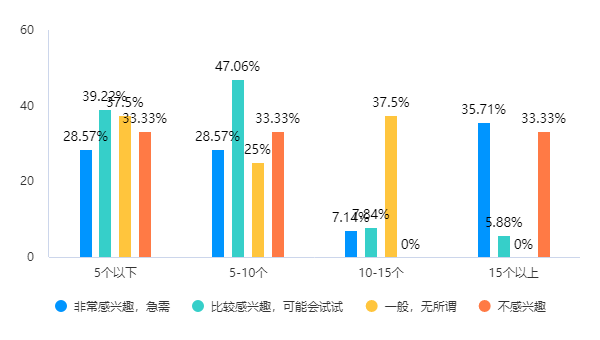
用户活跃度（以职务 / 活动参与类型区分）对解决方案兴趣强度的影响同样显著：学生会 / 团委干部群体中，“比较感兴趣，可能会尝试” 的占比高达 71.43%，是所有群体中该态度占比最高的；而社团骨干 / 活动成员群体里，“非常感兴趣，急需” 的占比达到 46.15%，远超其他群体，项目小组组长 / 负责人、实习兼职群体的 “比较感兴趣” 占比也均在 40% 以上；相比之下，“以上均无” 的普通用户虽有 60% 的 “比较感兴趣” 占比，但 “非常感兴趣” 的占比仅 24%—— 这意味着高活跃用户不仅对解决方案的接受度高，且 “刚需” 属性更强，普通用户则更多持尝试心态。
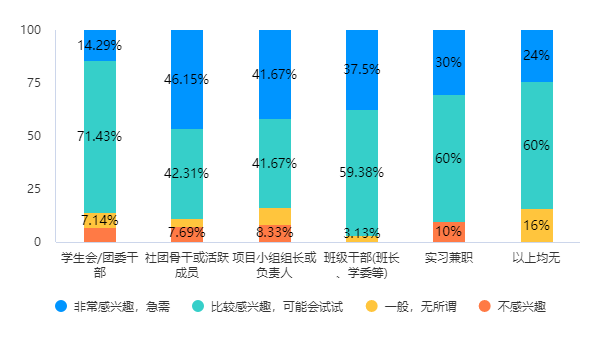
年级维度的付费意愿差异则贴合了不同阶段学生的消费与需求特征：大一用户中 “不愿付费，希望完全免费” 的占比高达 58.82%，“不确定，需要先用用看免费版” 的占比 35.29%，几乎没有主动付费的倾向；大二用户的态度转向以 “不确定” 为主，占比 46.88%；大三用户开始出现 18.75% 的 “愿意为特别好用的高级功能付费” 占比，结合其学业任务密集的特征，对功能价值的付费感知开始形成；大四用户因临近毕业、事务节奏不稳定，“不确定” 的占比升至 62.5%；而研究生及以上用户中，“愿意为高级功能付费” 的占比达到 60%，体现出成熟用户对工具价值的付费认可度更高。
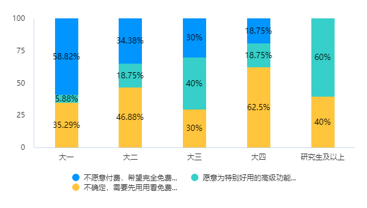
进一步关联付费意愿与解决方案兴趣度可以发现，“不愿付费，希望完全免费” 的用户中，“比较感兴趣，可能会尝试” 的占比为 37.5%，“非常感兴趣，急需” 的占比 28.57%；“愿意为高级功能付费” 的用户里，“非常感兴趣” 的占比 28.57%，“比较感兴趣” 的占比 21.57%；而 “不确定，需要先用用看免费版” 的用户，“非常感兴趣” 与 “比较感兴趣” 的占比合计达到 88%，是所有付费意愿群体中兴趣度最高的 —— 这一结果清晰说明，免费版体验是吸引用户的核心前提，对解决方案感兴趣但持观望态度的用户，正是后续通过免费版功能体验转化为付费用户的关键群体。
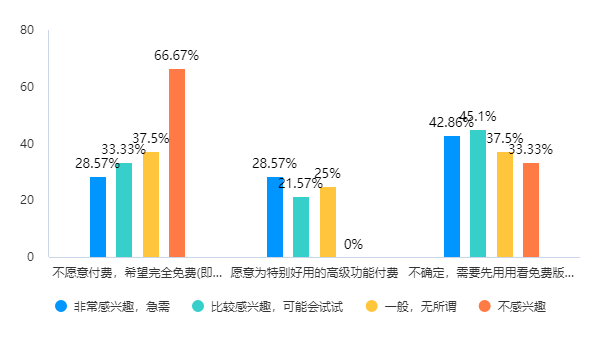
不同专业类型的用户，对智能功能的偏好呈现出与学业特征匹配的差异。理工类用户的功能需求更分散且全面，“冲突检测” 功能的选择占比达到 65.85%，“智能时间建议”“动线规划提醒” 的占比也均在 48% 以上，契合其课程实验与小组项目并行的日程特点；人文社科类用户则对 “动线规划提醒” 的需求最突出，选择占比高达 84%，同时 “任务预备提醒” 的占比也达到 56%，这与该专业多分散性课程、需频繁调整出行与准备节奏的需求相关；经管类用户的 “冲突检测” 占比 63.64%，“智能时间建议” 占比 72.73%，体现出其对日程时间管理的高要求；艺术体育类用户的功能选择相对集中，“智能时间建议” 占 58.33%，“任务预备提醒” 占 75%，而 “以上都不需要” 的占比也达到 16.67%，反映出该群体对智能功能的需求强度稍低；“其他” 类专业用户中，“以上都不需要” 的占比达到 100%，进一步凸显了专业差异对功能需求的影响。
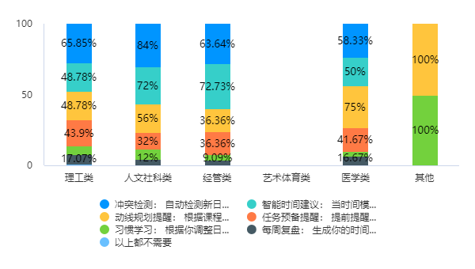
用户活跃度对智能功能偏好的影响则更贴合其事务管理的复杂度。学生会 / 团委干部群体中，“冲突检测”“智能时间建议” 的选择占比均在 78% 以上，是所有群体中对这两项功能需求最高的，契合其多事务并行的角色特征；社团骨干 / 活动成员群体的 “动线规划提醒” 占比 57.69%，“任务预备提醒” 占比 38.46%，体现出社团活动中对出行与准备的关注；项目小组组长 / 负责人的 “冲突检测” 占比高达 91.67%，几乎是该群体的核心需求，这与项目推进中日程冲突的高风险直接相关；班级干部 / 班长群体的 “智能时间建议” 占 65.63%，“任务预备提醒” 占 50%，贴合班级事务的协调需求；实习兼职群体的 “智能时间建议”“动线规划提醒” 占比均达到 70%，反映出实习场景下对通勤与时间安排的依赖；而 “以上均无” 的普通用户，“以上都不需要” 的占比达到 28%，对智能功能的整体需求度显著低于高活跃用户。
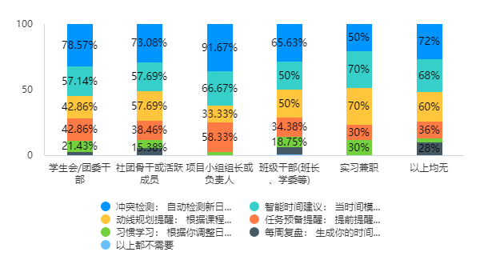
产品概念的选择差异则与年级对应的需求重心相关。大一用户中，选择 “一款不让你错过任何群聊日程的工具” 这一概念的占比达 64.71%，远高于 “一款能自动从微信聊天里提取日程的工具” 的 35.29%，契合大一新生对 “避免遗漏群聊信息” 的核心诉求；大二、大三用户的选择倾向与大一类似，“不错过群聊日程” 的占比分别为 56.25%、60%，仍是主流偏好；大四用户的选择则呈现均衡状态，两个概念的占比均为 50%，反映出其既需要信息提取的效率，也需要避免遗漏的保障；而研究生及以上用户中，“自动提取日程” 的概念占比升至 60%，体现出成熟用户对 “效率优先” 的功能定位更青睐。
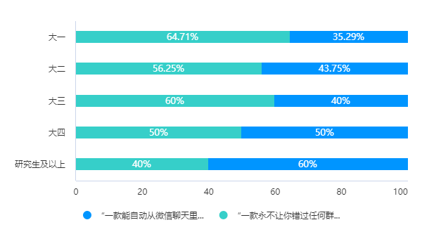
不同活跃度群体对产品概念的倾向也各有侧重。社团骨干 / 活动成员群体中，选择 “一款能自动从微信聊天里提取日程的工具” 的占比达到 33.33%，略高于 “一款不让你错过任何群聊日程的工具” 的 25.49%；项目小组组长 / 负责人则更倾向后者，占比 17.65%；班级干部 / 班长群体对 “不错过群聊日程” 的偏好更明显，占比 39.22%；实习兼职群体中，“自动提取日程” 的占比为 15.38%，是其相对更关注的概念；而 “以上均无” 的普通用户，对两个概念的选择占比分别为 33.33%、23.53%，整体倾向不突出。这一差异进一步说明，高活跃用户会根据自身角色的核心需求，选择更匹配的产品定位，而普通用户对概念的区分度感知较弱。
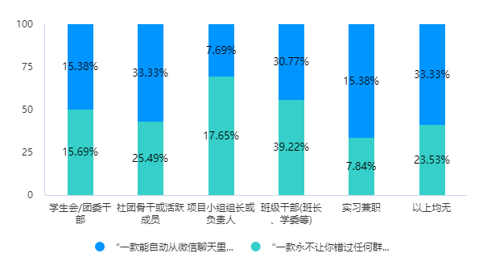
不同年级用户的使用顾虑程度，呈现出与学业阶段及日程管理经验匹配的变化趋势。大一用户对各维度顾虑的 “5 分（最顾虑）” 占比普遍集中在 35% 左右，比如 “提醒不及时或过度提醒”“操作体验差” 等顾虑的高程度担忧占比相对均衡，反映出新生对工具功能的全维度高敏感度；大二用户的顾虑分布逐渐分散，部分项的 5 分占比降至 30% 左右，同时 “4 分（较高顾虑）” 占比有所提升，体现出其对工具的认知开始从 “极致担忧” 转向 “针对性关注”；大三用户的顾虑更偏向功能体验类，比如 “识别不准确” 的 4 分占比达到 55%，高顾虑程度的集中性减弱，更多是基于日常使用的实际体验产生担忧；大四用户的 5 分占比再次上升，例如 “提醒不及时” 的 5 分占比达到 50%，这与毕业阶段日程事务的高时效性要求直接相关，对提醒准确性的需求更为迫切；而研究生及以上用户的顾虑则以 “4 分（较高顾虑）” 为主，占比达到 60%，5 分占比反而下降，或许是这类用户对工具的容错率有更理性的预期，顾虑更偏向 “较高关注” 而非 “极致担忧”。
用户活跃度对使用顾虑的影响，则与自身事务的重要性与密度高度关联。学生会 / 团委干部群体对 “隐私安全”“识别不准确” 等顾虑的 5 分占比在 42% 左右，处于较高水平 —— 这类用户转发的群消息常涉及组织事务，信息安全与内容识别的准确性直接影响事务推进，因此顾虑程度更高；社团骨干 / 活动成员对 “操作体验差” 的 5 分占比达到 50%，其高频参与社团活动、依赖工具管理密集日程的场景，使得工具流畅度成为核心顾虑点；项目小组组长 / 负责人的 “识别不准确” 顾虑 4 分占比达 58.33%，项目日程的准确性直接关联进度，容不得差错，因此对信息识别的顾虑尤为突出；班级干部 / 班长对 “提醒不及时” 的 5 分占比 43.75%，班级事务的时效性要求使其对提醒机制的可靠性高度敏感；实习兼职群体的 “收费模式” 顾虑 5 分占比 30%，这类用户对工具的付费成本更为谨慎；而 “以上均无” 的普通用户，各顾虑项的分布相对分散，5 分占比普遍在 40% 以下，由于其日程事务的重要性与密度较低，对工具的顾虑程度也相对更轻。
整体来看，年级维度的顾虑变化是用户对工具认知从 “全维度敏感” 到 “理性聚焦” 的过程，而活跃度维度的顾虑差异，则是事务场景的重要性与密度对工具核心需求的直接映射 —— 这也为后续工具针对不同群体优化顾虑应对策略提供了明确方向，比如对高活跃用户强化功能准确性与流畅度，对高年级用户突出理性的容错机制说明。
不同痛点场景的用户，对 “微信消息转日程” 解决方案的接受度与付费意愿呈现出明显的场景关联特征。从解决方案兴趣度来看，学业类痛点场景的接受度普遍更高：“作业 / 报告提交截止日” 场景中，“比较感兴趣，可能会尝试” 的用户占比达 55.32%，“小组会议 / 讨论”“课程调整（调课、停课）” 场景的这一占比也分别达到 54.17%、56%，均处于较高水平；而 “社团活动”“朋友聚会 / 约会” 等非学业场景，“非常感兴趣，急需” 的占比几乎为 0，仅 “比较感兴趣” 的占比相对突出（77.78%、66.67%）；即便是 “似乎没有发生过” 痛点的用户，“比较感兴趣” 的占比也达到 73.68%，反映出这类用户对工具的潜在价值存在一定预期。
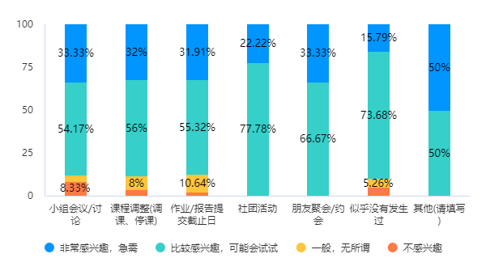
对应到付费意愿上，不同痛点场景的差异则更为显著：“作业 / 报告提交截止日”“小组会议 / 讨论” 等核心学业痛点场景中，“愿意为特别好用的高级功能付费” 的用户占比仅在 25% 左右，多数用户选择 “不确定，需要先用用看免费版”（占比 40% 以上）或 “不愿付费，希望完全免费”（占比 30% 以上）；“社团活动”“朋友聚会 / 约会” 场景的 “愿意付费” 占比直接为 0，几乎所有用户都倾向于免费使用；而 “似乎没有发生过” 痛点的用户，反而有 25.32% 选择 “愿意付费”，成为该维度中付费意愿相对突出的群体。
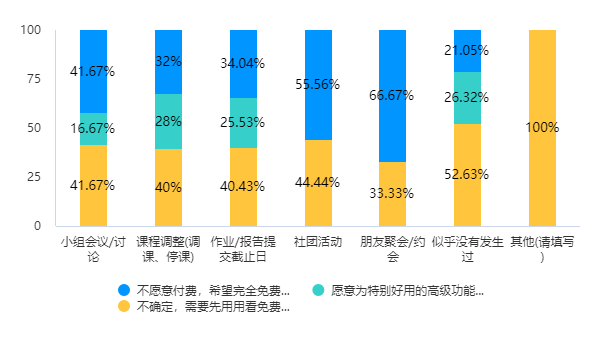
整体来看，核心学业痛点场景是解决方案接受度的主力场景，但这类场景的用户付费意愿普遍偏低，更倾向于先通过免费版体验功能价值；非学业痛点场景的接受度与付费意愿均处于低位，需求更偏向 “轻量辅助” 而非 “刚需工具”；而无明显痛点的潜在用户，虽当前未受痛点困扰，但对工具的潜在价值有一定认知，反而具备一定的付费转化潜力 —— 这一关联特征，既明确了解决方案的核心目标场景，也为后续 “免费拉新、付费转化” 的策略提供了场景化的参考依据。
不同产品概念偏好与月度订阅价格接受度的关联，呈现出明显的定位差异。偏好 “一款能自动从微信聊天里提取日程的工具” 这一概念的用户，对各价格区间的接受度相对分散，5 元及以下、6-10 元、11-15 元的占比均为 22.22%，16-20 元的占比稍高（33.33%），未表现出明确的集中倾向；而偏好 “一款永不你错过任何群消息重要日程，并提供智能提醒” 概念的用户，价格接受度则更聚焦于 11-15 元区间，占比达到 41.67%，5 元及以下的占比为 25%，其余区间占比相对均衡 —— 这意味着强调 “不遗漏 + 智能提醒” 的概念用户，对中价位的接受度更高，而侧重 “自动提取效率” 的概念用户，价格敏感度的分布更分散。
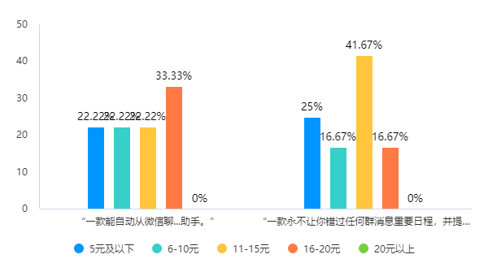
智能功能偏好与付费意愿的关联，则进一步体现出功能类型对用户付费倾向的影响。对于 “冲突检测”“智能时间建议” 等核心实用功能，用户的付费意愿普遍处于中等水平：“不愿付费，希望完全免费” 的占比在 27%-35% 之间，“愿意为特别好用的高级功能付费” 的占比在 17%-25% 之间，多数用户选择 “不确定，需要先用用看免费版”（占比 40%-48%），反映出核心功能用户更依赖免费体验来验证价值；“习惯学习” 功能的付费意愿相对均衡，不愿付费与愿意付费的占比均为 28.57%，不确定的占比为 42.86%；“每周复盘” 这类延伸功能的用户中，“不确定” 的占比高达 61.54%，不愿付费的占比仅 15.38%，观望情绪更为突出；而选择 “以上都不需要” 智能功能的用户，100% 倾向 “不确定”，几乎没有明确的付费或拒绝倾向。
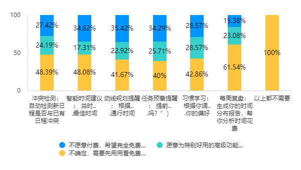
整体来看，核心智能功能的偏好用户以 “观望式付费态度” 为主，免费体验是撬动其付费意愿的关键前提；延伸类功能的用户观望情绪更浓，对功能价值的感知尚未形成明确认知；而不同产品概念用户的价格接受区间差异，也为后续结合概念定位制定差异化定价策略提供了具体的参考方向。
用户对该智能日程助手概念的偏好，集中体现为 **“便捷性、提醒功能、贴心体验” 三大核心诉求的匹配 **。其中 “便捷性” 是最突出的偏好点，“不需要手动切换软件”“自动整理繁琐导入”“微信内更方便” 等表述高频出现，精准命中了用户当前日程管理中 “跨工具操作低效、手动录入繁琐” 的痛点，微信生态内的集成模式进一步强化了这一便捷性感知。
“提醒功能” 是第二大偏好方向，“不错过重要日程”“预备提醒” 等反馈，与前期痛点分析中 “遗忘群聊日程” 的高频场景形成呼应，体现出用户对 “避免信息遗漏” 的核心需求被满足。而 “贴心体验” 的偏好也较为明显，“小管家更贴心”“帮规划时间好贴心” 等表述，说明 “情感化、辅助式” 的产品定位更易获得用户好感；同时有用户明确提及 “提取聊天记录会有隐私担忧”，侧面印证了 “贴心小管家” 的概念在缓解隐私顾虑上的优势。
此外，少量用户提到 “解决市场软件空缺”“提高办事效率”，体现出对工具实用价值与市场定位的认可，进一步强化了该概念与用户需求的匹配度。
用户的反馈可分为功能期望、功能 / 体验担忧、操作顾虑三类，清晰指向工具优化的核心方向。功能期望上，“课表录入”“朋友共享日程” 的需求，是对学生群体核心日程场景（课表）与社交协作场景的延伸，体现出用户对工具 “覆盖更多高频场景” 的期待。
功能与体验担忧是反馈的重点：一方面是 “模糊信息识别”“日程导入准确性” 的功能精准度问题，与前期 “识别不准确” 的痛点顾虑一致，说明用户对工具核心功能的可靠性有较高要求；另一方面是 “页面卡顿”“摇一摇广告” 的体验问题，反映出用户对工具 “流畅、无干扰” 的基础使用诉求。
操作顾虑则集中在 “额外打卡繁琐”“使用习惯难改变”，部分用户表示 “现有 app 用得顺手、智能工具需求不强”，说明工具的操作门槛与用户既有习惯的冲突，可能成为用户转化的关键阻碍。
用户对智能日程助手的期望聚焦于场景延伸与功能精准，而担忧则围绕核心功能可靠性、使用体验与操作适配性，这些反馈为工具的功能迭代与体验优化提供了直接的落地方向。
操作系统原生日历工具（如iOS日历、华为日历）构成了市场的基础层。 它们作为设备的基础设施，拥有系统级集成的天然优势，如最高的通知权限和无需下载的便捷性。然而，其核心劣势在于彻底的“被动性”与“场景孤立性”。它们是与用户信息流入端（尤其是微信这样的社交沟通主阵地）完全割裂的“信息孤岛”。用户必须主动将已在聊天信息中明确的事项，手动输入或复制粘贴到日历中，这个过程不仅造成了不必要的操作负担，更关键的是引入了遗忘和出错的巨大风险。从用户差评中我们频繁看到“懒得每次手动输入”、“经常忘记从群里转到日历”等真实反馈，这恰恰印证了原生工具在“信息输入”这一起始环节存在巨大体验鸿沟。因此，WeSchedule的突破口并非笨拙地试图替代原生日历，而是策略性地定位为赋能原生日历的“智能化桥梁”。我们的价值在于填补从“信息产生”到“信息记录”之间的自动化空白，通过一键转发完成信息解析与录入，让用户继续在他们熟悉且信任的原生日历中进行查看和管理，这一定位巧妙地规避了与系统级应用的正面竞争，转而成为其不可或缺的互补性服务。
第三方专业效率应用（如滴答清单、Todoist）代表了功能深度与方法论导向的解决方案。 这类产品功能强大，深受资深效率爱好者的青睐，支持GTD等多种时间管理方法论，跨平台同步体验完善。但其成功的关键，也构成了其在大学生市场中普及的障碍：过于“重型”与“复杂”。对于绝大多数追求轻快、便捷的大学生而言，这些应用庞杂的功能体系带来了显著的学习成本和认知负担。应用商店的用户差评中，“功能太复杂不知道从何用起”、“设置繁琐”等声音不绝于耳。更重要的是，它们与操作系统原生工具一样，同样与微信场景相分离，未能解决信息从聊天窗口到任务列表的“无缝流转”这一根本性痛点。它们试图为用户建造一个功能齐备的“效率堡垒”，但大学生需要的或许只是一座能够轻松跨越信息鸿沟的“便捷桥梁”。WeSchedule的差异化定位正在于此——我们不做大而全的“瑞士军刀”，而是极致聚焦于“微信消息转日程”这一单点痛点，追求极致的简单和流畅。我们深刻理解大学生群体“够用就好”的核心诉求，以单一功能解决最高频的场景问题，这种极简主义恰恰是对抗功能泛滥的最佳策略。
超级App的内置功能（如微信收藏备注、钉钉/飞书日程）则代表了生态内的潜在竞争。 它们虽身处生态内部，避免了场景切换的成本，但其发展往往受限于母体应用的战略重心。以微信为例，其“收藏”功能中的笔记备注虽可简单记录日程，但体验隐蔽、功能薄弱，更像一个临时备忘录，而非一个真正的日程管理工具。钉钉、飞书的日程功能则深深打上了职场协同的烙印，其正式、严谨的风格与大学生相对轻松、个性化的社交学习氛围存在隔阂。这些内置功能的用户差评多集中于“不好用”、“太难找”、“提醒不强”等。这揭示了一个关键的市场空白：在国民级应用微信的生态内，存在着一个“功能洼地”——日程管理需求真实且强烈，但平台自身提供的解决方案体验远未达标。这为WeSchedule这样的垂直、专注的小程序提供了绝佳的生存土壤。我们的定位是成为“微信生态中最懂日程的专家”，而非一个什么都能做但什么都不精的通才。我们通过深度集成微信的分享接口，提供远超微信内置功能的专业日程管理体验，填补这一生态位空白。
综合而言，对竞争格局的深度分析清晰地指向了WeSchedule的差异化定位与独特机会。 我们的战略不是与任何一层级的对手进行同质化功能的军备竞赛，而是精准切入“大学生”、“微信生态”、“日程信息自动化”这三个关键词的交汇点。我们敏锐地洞察到，现有解决方案无论是系统级工具、专业应用还是生态内功能，都无法很好地解决“信息从碎片化沟通场景到结构化日历的低成本、高可靠流转”这一核心问题。用户差评中弥漫的“麻烦”、“复杂”、“易忘”情绪，正是市场向我们发出的最强烈信号。因此，WeSchedule的立身之本是场景的深度而非功能的广度。我们通过“手动转发”这一在控制感与便捷性之间取得精妙平衡的交互方式，打造一种“沟通即记录”的无缝体验。这一看似细微的创新，实则是针对一个巨大且被忽视的用户痛点的精准手术刀式打击，有望在巨头林立的效率工具市场中，开辟出一个属于我们自己的、极具用户粘性的价值空间。
调研数据充分验证了 WeSchedule 产品概念的合理性与必要性，核心结论如下：其一，用户痛点真实且普遍，PRD 提出的 “信息过载与遗漏风险、操作割裂效率低、工具被动缺乏智能” 三大痛点均得到数据支撑，80% 的用户有过遗漏群聊日程的经历，45.6% 的用户 “经常 / 总是” 觉得手动录入繁琐，超 50% 的用户期待冲突检测、智能时间建议等智能功能，学业场景（作业 / 报告提交截止日占比 52.22%）是核心痛点场景；其二，解决方案接受度显著，针对 “微信消息转日程” 的核心功能，29.9% 的用户 “非常感兴趣，急需”，57.5% 的用户 “比较感兴趣，可能会试试”，合计近 88% 的接受度，且日均群聊 15 个以上、高活跃用户的 “非常感兴趣” 占比更高，印证了解决方案与核心用户需求的高度契合；其三，用户顾虑聚焦明确，“识别不准确，经常出错”（平均得分 4.08）、“提醒不及时或过度提醒”（平均得分 3.96）、“操作体验差，小程序卡顿”（平均得分 3.93）是用户最核心的三大顾虑，隐私安全与收费模式顾虑相对次要，但仍需重视；其四，种子用户画像清晰，大二至大四的社团达人 / 学生干部、科研党 / 研究生、实习兼职活跃者三类群体，具备日程密集、群聊参与度高、痛点显著、付费意愿较强的特征，是产品初期的核心目标用户。
从市场、付费、成本、竞争四大维度分析，WeSchedule 具备明确的商业可行性：其一，市场机会稀缺且规模可观，微信生态内缺乏聚焦大学生群体的轻量日程管理工具，现有工具或与微信场景割裂，或功能过重，而中国大学生群体规模庞大，数字化接受度高，微信使用粘性强，核心痛点未被满足，市场空白明确；其二，付费模式具备可持续性，调研显示 24.1% 的用户明确愿意为高级功能付费，44.8% 的用户持观望态度（需免费版体验验证价值），愿意付费用户的月度价格接受区间集中在 5-15 元（11-15 元占比 33.3%），与大学生 “一杯奶茶钱” 的消费心理账户匹配，免费增值（基础功能免费 + 高级智能功能付费）的模式既能快速积累用户，又能实现商业变现；其三，成本结构可控，MVP 阶段以微信小程序为载体，开发与迭代成本低于独立 App，初期用户激励金（约 6000 元）、问卷平台与分析工具会员等成本可承受，后续规模化阶段的服务器与 API 调用成本可随用户增长逐步分摊；其四，竞争壁垒可逐步构建，产品的核心壁垒在于微信生态的深度集成（“转发” 交互无缝衔接沟通场景）、校园场景的精准适配（课程表导入、地点库匹配）、用户行为数据积累带来的 AI 识别准确率提升，这些壁垒难以被传统效率工具或微信内置功能快速复制，同时隐私合规、技术准确性等风险可通过明确隐私政策、优化 NLP 引擎、设计友好编辑界面等方式有效应对。
产品层面，坚持 “极简核心、快速验证、迭代优化” 的战略，MVP 阶段聚焦 “微信消息转日程” 的核心流程，不堆砌功能，优先解决用户核心顾虑，后续基于用户数据逐步迭代智能功能；市场层面，采取 “精准触达、口碑裂变、场景渗透” 的策略，聚焦高活跃核心用户群体，通过校园场景化推广建立初始用户池；运营层面，以 “免费拉新、体验转化、口碑留存” 为核心，通过免费版核心功能吸引用户，借助优质体验促进付费转化，依托用户反馈快速优化产品。
产品行动上，严格围绕 “新体验 - 旧体验 - 转换成本 = 用户价值” 的思维打造 MVP：首先，聚焦 “转发 - 解析 - 确认 - 同步至原生日历” 的全链路极简体验，新体验的核心是将旧体验中 “切换 App + 手动输入 + 反复核对” 的 4-6 步繁琐流程，简化为 “一键转发 + 确认” 的 2 步操作，同时降低转换成本 —— 无需用户下载安装（微信小程序直接触达）、无需学习新操作（沿用微信转发习惯）、无需放弃现有工具（同步至用户熟悉的原生日历），让用户以极低成本获得便捷体验；其次，针对用户最顾虑的 “识别不准确” 问题，MVP 阶段接入大语言模型 API 并结合校园场景语料（课程名、地点名、常用时间表述）优化 NLP 引擎，将识别准确率提升至 75% 以上，同时设计简洁直观的预览编辑界面，允许用户快速修正错误，降低 “修正成本”，相比旧体验中 “手动输入易出错且难修改” 的痛点形成显著优势；最后，优化提醒机制，提供 “默认提醒 + 自定义提醒” 选项，支持用户设置不同场景的提前提醒时间（如作业截止日提前 1 天、会议提前 30 分钟），解决 “提醒不及时或过度提醒” 的顾虑，让新体验的 “贴心提醒” 超越旧体验中 “无针对性提醒” 的被动状态。
市场行动上，精准触达核心用户以降低获客成本与信任转换成本：优先在目标高校试点，通过学生会、社团、项目小组等高活跃用户集中的社群，开展 “种子用户招募计划”，提供 1 个月免费会员激励，让核心用户率先体验产品价值，借助其在校园内的社交影响力实现口碑裂变；与校园 KOL（如学生组织负责人、效率类博主）合作，通过真实使用场景的短视频、图文内容种草，突出 “转发即创建日程” 的便捷性，对比旧体验的繁琐，强化用户对产品价值的感知；在教学楼、图书馆、社团活动场地等场景设置线下推广点，提供扫码即体验的便捷入口，现场指导用户完成首次 “转发 - 创建日程” 操作，降低用户的初始使用转换成本。
运营行动上，通过全链路运营提升用户价值与付费转化：上线初期，免费版开放 “消息转日程” 核心功能与基础的日程列表查看功能，满足用户核心需求，同时通过弹窗引导用户反馈使用问题（如识别错误、操作不便），既收集优化数据，又增强用户参与感；针对免费版用户，当累计创建 10 条以上日程后，推送 “7 天高级功能体验卡”（含冲突检测、动线规划提醒），让用户直观感受高级功能的价值，降低付费决策的转换成本 —— 新体验的 “智能规划” 相比旧体验的 “单纯记录” 与免费版的 “基础创建” 形成差异，同时将月度会员价格定为 12 元（契合 5-15 元的核心接受区间），并提供 “首月半价 6 元” 的优惠，进一步降低付费门槛；建立用户反馈社群，快速响应并解决用户的使用问题，针对高频反馈的识别错误案例，每周更新 NLP 识别规则库，让产品体验持续优化，同时通过社群收集用户对新功能的需求，形成 “用户反馈 - 产品优化 - 价值提升” 的正向循环，不断扩大新体验与旧体验的差距，提升用户留存与付费意愿。
主要使用模型：Deepseek，Kimi，Doubao
主要使用情况：制图代码编写；图表的说明与分析；文献查找；分析思路参考；文本撰写，包括依据提纲扩写、修改优化内容、总结性文字撰写等。
略
关于大学生日程管理需求与AI工具接受度的调研
同学你好！这是一份关于日程管理习惯与需求的匿名调查，旨在帮助大学生更轻松地应对微信群聊中的日程信息，告别遗忘和手动输入的烦恼，耗时约2-3分钟。你的每一个反馈都至关重要，感谢你的宝贵时间！
你是否是中国内地高校在校大学生? [单选题] *
| ○是 |
|---|
| ○否 |
你的年级是? [单选题] *
| ○大一 |
|---|
| ○大二 |
| ○大三 |
| ○大四 |
| ○研究生及以上 |
你的专业类型是? [单选题] *
| ○理工类 |
|---|
| ○人文社科类 |
| ○经管类 |
| ○艺术体育类 |
| ○医学类 |
| ○其他 _________________ |
你目前担任的职务或参与的活动类型是? [多选题] *
| □学生会/团委干部 |
|---|
| □社团骨干或活跃成员 |
| □项目小组组长或负责人 |
| □班级干部(班长、学委等) |
| □实习兼职 |
| □以上均无 |
你平均每天使用微信的时长是? [单选题] *
| ○1小时以下 |
|---|
| ○1-3小时 |
| ○3-5小时 |
| ○5小时以上 |
你平均每日参与的群聊数量(包括课程群、小组群、社团群等)是? [单选题] *
| ○5个以下 |
|---|
| ○5-10个 |
| ○10-15个 |
| ○15个以上 |
你目前主要使用什么工具来管理你的课程表、会议、任务截止日等日程? [多选题] *
| □手机系统自带的日历(如iOS日历、华为日历) |
|---|
| □纸质笔记本/手账 |
| □第三方日历App(如Google Calendar) |
| □待办清单App(如滴答清单、Todoist) |
| □微信/QQ的聊天记录、收藏或备注功能 |
| □靠脑子记 |
| □其他(请填写) _________________ |
| □我几乎不系统管理日程 |
你对你当前主要使用的日程管理工具，总体满意度如何? [单选题] *
| ○非常不满意 | ○不满意 | ○一般 | ○满意 | ○非常满意 |
|---|
依赖于（题目：你目前主要使用什么工具来管理你的课程表、...）第1;2;3;4;5;7个选项
在微信群聊中讨论并产生日程安排时，你遇到以下情况的频率如何?[矩阵单选题] *
| 总是 | 经常 | 有时 | 很少 | 从不 | |
|---|---|---|---|---|---|
| 担心自己会忘记看群消息/忘了记下来 | ○ | ○ | ○ | ○ | ○ |
| 手动从聊天框切换到日历 App输入很麻烦 | ○ | ○ | ○ | ○ | ○ |
| 事后找不到那条消息了 | ○ | ○ | ○ | ○ | ○ |
| 记下了时间，但忘记了需要提前准备(如准备材料) | ○ | ○ | ○ | ○ | ○ |
| 记下了会议时间，但低估了通勤时间导致迟到 | ○ | ○ | ○ | ○ | ○ |
最近一次因为遗漏或忘记群聊中的日程信息而带来不便，是在什么场景下? [多选题] *
| □小组会议/讨论 |
|---|
| □课程调整(调课、停课) |
| □作业/报告提交截止日 |
| □社团活动 |
| □朋友聚会/约会 |
| □似乎没有发生过 |
| □其他(请填写) _________________ |
如果有一款微信小程序，能让你只需将微信聊天消息“转发”给它，它就自动识别出里面的时间、事件、地点并为你一键生成日历日程，你对这个功能的感兴趣程度是? [单选题] *
| ○非常感兴趣，急需 |
|---|
| ○比较感兴趣，可能会试试 |
| ○一般，无所谓 |
| ○不感兴趣 |
你对这个核心功能不感兴趣的主要原因是? [多选题] *
| □现有的方式已足够，没有痛点 |
|---|
| □不信任AI的识别准确性 |
| □担心隐私和安全问题 |
| □"转发"这个操作依然麻烦 |
| □更希望有全自动的方案(无需手动转发) |
| □其他(请填写) |
依赖于（题目：如果有一款微信小程序，能让你只需将微信聊...）第4个选项
除了“转发消息”，你认为哪种方式对你来说也更自然便捷？ [多选题] *
| □复制文字后，打开小程序能自动识别并提示粘贴 |
|---|
| □在微信内长按文字时，菜单中出现“添加到[产品名]”的选项 |
| □通过Siri/语音助手直接说“把这件事加到我的日程” |
| □其他 _________________ |
以下哪些智能功能让你觉得这款工具更有吸引力？（请选择您认为最重要的1-3项) [多选题] *
| □冲突检测： 自动检测新日程是否与已有日程冲突 |
|---|
| □智能时间建议： 当时间模糊时（如“下周五下午”），自动推荐一个不会与你课程冲突的最佳时间 |
| □动线规划提醒： 根据课程/会议地点，提前提醒你“该出发了”，并估算通行时间 |
| □任务预备提醒： 提前提醒你为会议或任务做准备（如“明天要开会，今晚需要准备材料吗？”） |
| □习惯学习： 根据你调整日程的习惯（如总提前15分钟），自动学习并应用你的偏好 |
| □每周复盘： 生成你的时间分布报告，帮你分析时间花费 |
| □以上都不需要 |
如果这款产品基础功能(解析消息、创建日程)免费，高级的智能功能需要订阅付费，你的态度是? [单选题] *
| ○不愿意付费，希望完全免费(即使这意味着没有高级功能) |
|---|
| ○愿意为特别好用的高级功能付费 |
| ○不确定，需要先用用看免费版再决定 |
请根据您的第一感觉，选择更偏好的概念 [单选题] *
| ○“一款能自动从微信聊天里提取日程、并为你智能规划最佳时间安排的AI助手。” |
|---|
| ○“一款永不让你错过任何群消息重要日程，并提供贴心预备提醒的智能小管家。” |
您最喜欢这个概念哪一点? [填空题]
_________________________________
根据以上描述，您的购买兴趣有多大？(1-5分，1分=完全没兴趣，5分=非常有兴趣)
[单选题] *
| ○1 |
|---|
| ○2 |
| ○3 |
| ○4 |
| ○5 |
你愿意接受的月度订阅价格范围是? [单选题] *
| ○5元及以下 |
|---|
| ○6-10元 |
| ○11-15元 |
| ○16-20元 |
| ○20元以上 |
依赖于（题目：如果这款产品基础功能(解析消息、创建日程...）第2个选项
如果付费，哪些因素最能说服你开通会员?请选择最重要的2项。 [多选题] *
| □能显著提升我的学习/工作效率 |
|---|
| □能彻底解决我遗忘日程的焦虑感 |
| □功能独特，其他产品无法替代 |
| □价格非常便宜，一杯奶茶的钱 |
| □同学/朋友都在用，且口碑很好 |
| □其他(请填写) |
你对尝试这样一款工具的顾虑是什么?（1=完全不担心，5=非常担心）[矩阵量表题] *
| 1 | 2 | 3 | 4 | 5 | |
|---|---|---|---|---|---|
| 隐私安全，担心聊天记录被泄露或滥用 | ○ | ○ | ○ | ○ | ○ |
| 识别不准确，经常出错，反而需要花更多时间修改 | ○ | ○ | ○ | ○ | ○ |
| 操作体验差，小程序卡顿，不如手动输入快 | ○ | ○ | ○ | ○ | ○ |
| 提醒不及时或过度提醒，造成打扰 | ○ | ○ | ○ | ○ | ○ |
| 收费模式，担心后期乱收费或免费版无法使用 | ○ | ○ | ○ | ○ | ○ |
如果这款产品体验良好，你有多大可能将它推荐给身边的同学或朋友? [单选题] *(0代表“完全不可能”，10代表“极有可能”)
| ○0 | ○1 | ○2 | ○3 | ○4 | ○5 | ○6 | ○7 | ○8 | ○9 | ○10 |
|---|
对于你理想中的“智能日程助手”，你还有任何其他的期望、想法或担忧吗?请自由告诉我们。 [填空题]
_________________________________
问卷结束，再次感谢您的支持！您的反馈对我们至关重要。
略
交叉分析：活跃度 × 顾虑
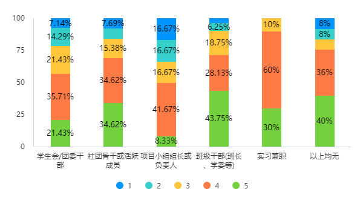
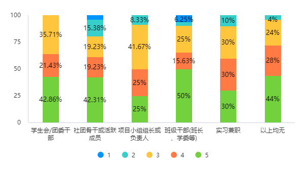
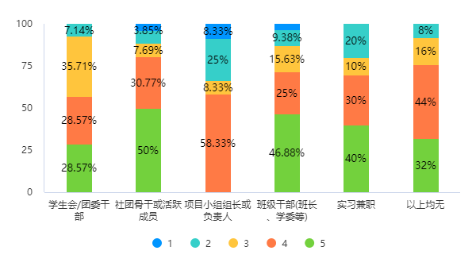
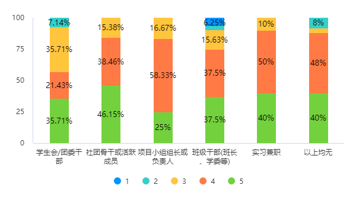
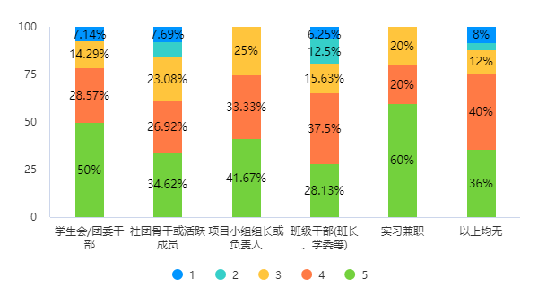
交叉分析：年级 × 顾虑
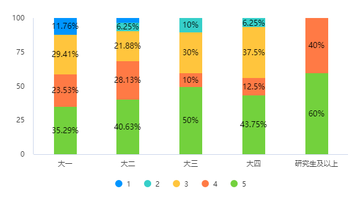
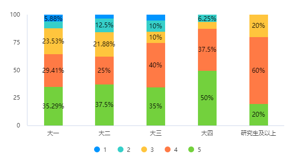
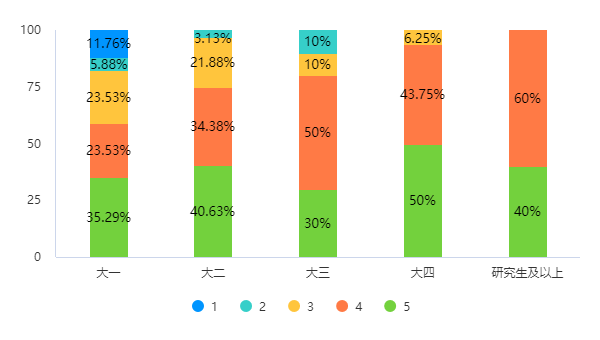
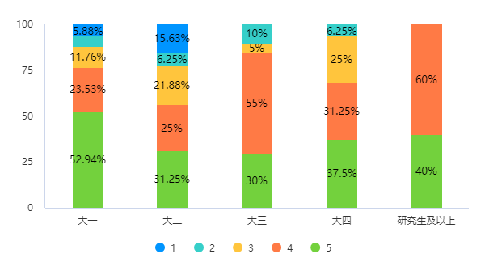
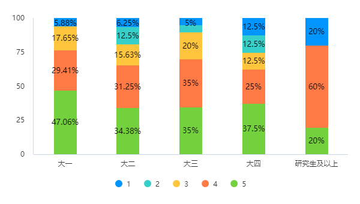
交叉分析：日均群聊数（15 个以上 5 个以下）× 痛点频率
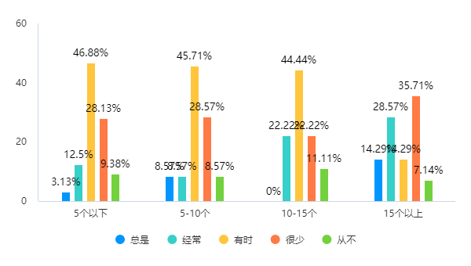
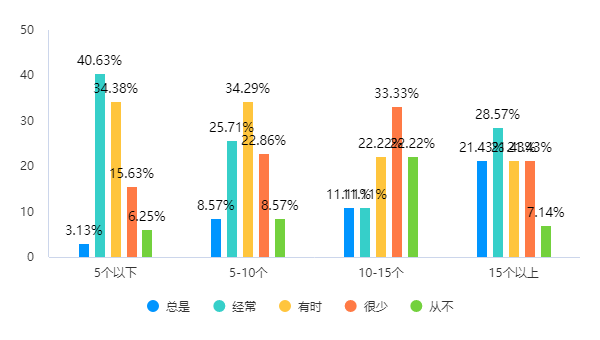
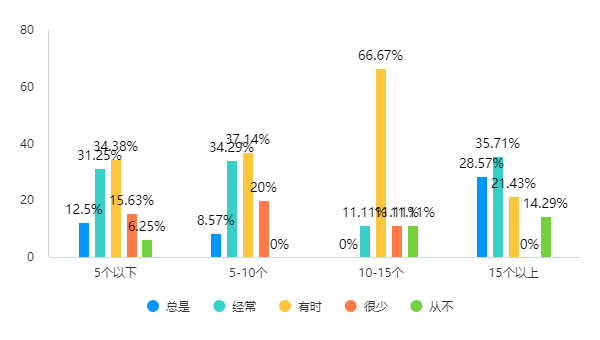
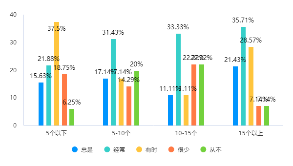
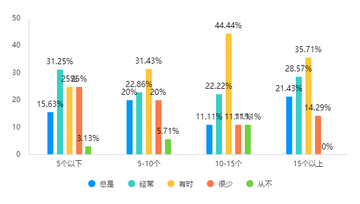
交叉分析：活跃度与痛点频率
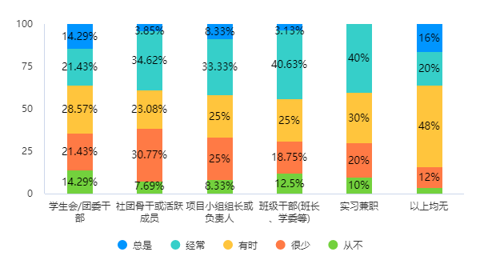